Chapter 4: Prokaryotic Diversity¶
Introduction¶
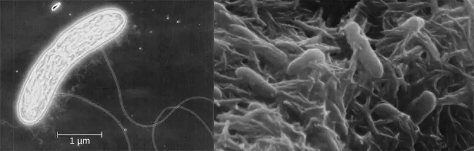
Scientists have studied prokaryotes for centuries, but it wasn’t until 1966 that scientist Thomas Brock (1926–2021) discovered that certain bacteria can live in boiling water. This led many to wonder whether prokaryotes may also live in other extreme environments, such as at the bottom of the ocean, at high altitudes, or inside volcanoes, or even on other planets.
Prokaryotes have an important role in changing, shaping, and sustaining the entire biosphere. They can produce proteins and other substances used by molecular biologists in basic research and in medicine and industry. For example, the bacterium Shewanella lives in the deep sea, where oxygen is scarce. It grows long appendages, which have special sensors used to seek the limited oxygen in its environment. It can also digest toxic waste and generate electricity. Other species of prokaryotes can produce more oxygen than the entire Amazon rainforest, while still others supply plants, animals, and humans with usable forms of nitrogen; and inhabit our body, protecting us from harmful microorganisms and producing some vitally important substances. This chapter will examine the diversity, structure, and function of prokaryotes.
4.1 Prokaryote Habitats, Relationships, and Microbiomes¶
Learning Objectives
By the end of this section, you will be able to:
- Identify and describe unique examples of prokaryotes in various habitats on earth
- Identify and describe symbiotic relationships
- Compare normal/commensal/resident microbiota to transient microbiota
- Explain how prokaryotes are classified
Clinical Focus: Part 1
Marsha, a 20-year-old university student, recently returned to the United States from a trip to Nigeria, where she had interned as a medical assistant for an organization working to improve access to laboratory services for tuberculosis testing. When she returned, Marsha began to feel fatigue, which she initially attributed to jet lag. However, the fatigue persisted, and Marsha soon began to experience other bothersome symptoms, such as occasional coughing, night sweats, loss of appetite, and a low-grade fever of 37.4 °C (99.3 °F).
Marsha expected her symptoms would subside in a few days, but instead, they gradually became more severe. About two weeks after returning home, she coughed up some sputum and noticed that it contained blood and small whitish clumps resembling cottage cheese. Her fever spiked to 38.2 °C (100.8 °F), and she began feeling sharp pains in her chest when breathing deeply. Concerned that she seemed to be getting worse, Marsha scheduled an appointment with her physician.
- Could Marsha’s symptoms be related to her overseas travel, even several weeks after returning home?
Jump to the next Clinical Focus box.
All living organisms are classified into three domains of life: Archaea, Bacteria, and Eukarya. In this chapter, we will focus on the domains Archaea and Bacteria. Archaea and bacteria are unicellular prokaryotic organisms. Unlike eukaryotes, they have no nuclei or any other membrane-bound organelles.
Prokaryote Habitats and Functions¶
Prokaryotes are ubiquitous. They can be found everywhere on our planet, even in hot springs, in the Antarctic ice shield, and under extreme pressure two miles under water. One bacterium, Paracoccus denitrificans, has even been shown to survive when scientists removed it from its native environment (soil) and centrifuged it to 2.4 g, equivalent to the gravitational force on the surface of Jupiter.
Prokaryotes also are abundant on and within the human body. It has been estimated that prokaryotes, especially bacteria, outnumber nucleated human cells 10:1.1 More recent studies suggest the ratio could be closer to 1:1, but even that ratio means that there are a great number of bacteria within the human body.2 Bacteria thrive in the human mouth, nasal cavity, throat, ears, gastrointestinal tract, and vagina. Large colonies of bacteria can be found on healthy human skin, especially in moist areas (armpits, navel, and areas behind ears). However, even drier areas of the skin are not free from bacteria.
The existence of prokaryotes is very important for the stability and thriving of ecosystems. For example, they are a necessary part of soil formation and stabilization processes through the breakdown of organic matter and development of biofilms. One gram of soil contains up to 10 billion microorganisms (most of them prokaryotic) belonging to about 1,000 species. Many species of bacteria use substances released from plant roots, such as acids and carbohydrates, as nutrients. The bacteria metabolize these plant substances and release the products of bacterial metabolism back to the soil, forming humus and thus increasing the soil’s fertility. In salty lakes such as the Dead Sea (Figure 4.2), salt-loving halobacteria decompose dead brine shrimp and nourish young brine shrimp and flies with the products of bacterial metabolism.
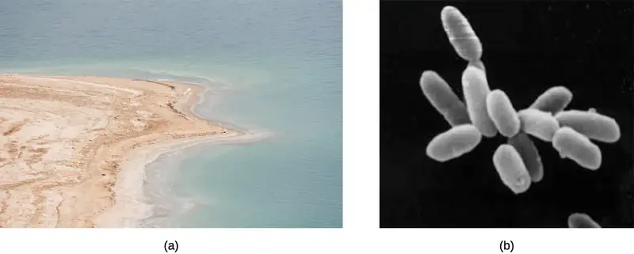
In addition to living in the ground and the water, prokaryotic microorganisms are abundant in the air, even high in the atmosphere. There may be up to 2,000 different kinds of bacteria in the air, similar to their diversity in the soil.
Prokaryotes can be found everywhere on earth because they are extremely resilient and adaptable. They are often metabolically flexible, which means that they might easily switch from one energy source to another, depending on the availability of the sources, or from one metabolic pathway to another. For example, certain prokaryotic cyanobacteria can switch from a conventional type of lipid metabolism, which includes production of fatty aldehydes, to a different type of lipid metabolism that generates biofuel, such as fatty acids and wax esters. Groundwater bacteria store complex high-energy carbohydrates when grown in pure groundwater, but they metabolize these molecules when the groundwater is enriched with phosphates. Some bacteria get their energy by reducing sulfates into sulfides, but can switch to a different metabolic pathway when necessary, producing acids and free hydrogen ions.
Prokaryotes perform functions vital to life on earth by capturing (or “fixing”) and recycling elements like carbon and nitrogen. Organisms such as animals require organic carbon to grow, but, unlike prokaryotes, they are unable to use inorganic carbon sources like carbon dioxide. Thus, animals rely on prokaryotes to convert carbon dioxide into organic carbon products that they can use. This process of converting carbon dioxide to organic carbon products is called carbon fixation.
Plants and animals also rely heavily on prokaryotes for nitrogen fixation, the conversion of atmospheric nitrogen into ammonia, a compound that some plants can use to form many different biomolecules necessary to their survival. Bacteria in the genus Rhizobium, for example, are nitrogen-fixing bacteria; they live in the roots of legume plants such as clover, alfalfa, and peas (Figure 4.3). Ammonia produced by Rhizobium helps these plants to survive by enabling them to make building blocks of nucleic acids. In turn, these plants may be eaten by animals—sustaining their growth and survival—or they may die, in which case the products of nitrogen fixation will enrich the soil and be used by other plants.
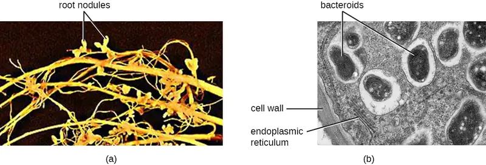
Another positive function of prokaryotes is in cleaning up the environment. Recently, some researchers focused on the diversity and functions of prokaryotes in manmade environments. They found that some bacteria play a unique role in degrading toxic chemicals that pollute water and soil.3
Despite all of the positive and helpful roles prokaryotes play, some are human pathogens that may cause illness or infection when they enter the body. In addition, some bacteria can contaminate food, causing spoilage or foodborne illness, which makes them subjects of concern in food preparation and safety. Less than 1% of prokaryotes (all of them bacteria) are thought to be human pathogens, but collectively these species are responsible for a large number of the diseases that afflict humans.
Besides pathogens, which have a direct impact on human health, prokaryotes also affect humans in many indirect ways. For example, prokaryotes are now thought to be key players in the processes of climate change. In recent years, as temperatures in the earth’s polar regions have risen, soil that was formerly frozen year-round (permafrost) has begun to thaw. Carbon trapped in the permafrost is gradually released and metabolized by prokaryotes. This produces massive amounts of carbon dioxide and methane, greenhouse gases that escape into the atmosphere and contribute to the greenhouse effect.
Check Your Understanding
- In what types of environments can prokaryotes be found?
- Name some ways that plants and animals rely on prokaryotes.
Symbiotic Relationships¶
As we have learned, prokaryotic microorganisms can associate with plants and animals. Often, this association results in unique relationships between organisms. For example, bacteria living on the roots or leaves of a plant get nutrients from the plant and, in return, produce substances that protect the plant from pathogens. On the other hand, some bacteria are plant pathogens that use mechanisms of infection similar to bacterial pathogens of animals and humans.
Prokaryotes live in a community, or a group of interacting populations of organisms. A population is a group of individual organisms belonging to the same biological species and limited to a certain geographic area. Populations can have cooperative interactions, which benefit the populations, or competitive interactions, in which one population competes with another for resources. The study of these interactions between microbial populations and their environment is called microbial ecology.
Any interaction between different species that are associated with each other within a community is called symbiosis. Such interactions fall along a continuum between opposition and cooperation. Interactions in a symbiotic relationship may be beneficial or harmful, or have no effect on one or both of the species involved. Table 4.1 summarizes the main types of symbiotic interactions among prokaryotes.
Table 4.1
| Types of Symbiotic Relationships | ||
|---|---|---|
| Type | Population A | Population B |
| Mutualism | Benefitted | Benefitted |
| Amensalism | Harmed | Unaffected |
| Commensalism | Benefitted | Unaffected |
| Neutralism | Unaffected | Unaffected |
| Parasitism | Benefitted | Harmed |
When two species benefit from each other, the symbiosis is called mutualism (or syntropy, or crossfeeding). For example, humans have a mutualistic relationship with the bacterium Bacteroides thetaiotaomicron, which lives in the intestinal tract. Bacteroides thetaiotaomicron digests complex polysaccharide plant materials that human digestive enzymes cannot break down, converting them into monosaccharides that can be absorbed by human cells. Humans also have a mutualistic relationship with certain strains of Escherichia coli, another bacterium found in the gut. E. coli relies on intestinal contents for nutrients, and humans derive certain vitamins from E. coli, particularly vitamin K, which is required for the formation of blood clotting factors. (This is only true for some strains of E. coli, however. Other strains are pathogenic and do not have a mutualistic relationship with humans.)
A type of symbiosis in which one population harms another but remains unaffected itself is called amensalism. In the case of bacteria, some amensalist species produce bactericidal substances that kill other species of bacteria. The microbiota of the skin is composed of a variety of bacterial species, including Staphylococcus epidermidis and Cutibacterium acnes. Although both species have the potential to cause infectious diseases when protective barriers are breached, they both produce a variety of antibacterial bacteriocins and bacteriocin-like compounds. S. epidermidis and C. acnes are unaffected by the bacteriocins and bacteriocin-like compounds they produce, but these compounds can target and kill other potential pathogens.
In another type of symbiosis, called commensalism, one organism benefits while the other is unaffected. This occurs when the bacterium Staphylococcus epidermidis uses the dead cells of the human skin as nutrients. Billions of these bacteria live on our skin, but in most cases (especially when our immune system is healthy), we do not react to them in any way. S. epidermidis provides an excellent example of how the classifications of symbiotic relationships are not always distinct. One could also consider the symbiotic relationship of S. epidermidis with humans as mutualism. Humans provide a food source of dead skin cells to the bacterium, and in turn the production of bacteriocin can provide an defense against potential pathogens.
If neither of the symbiotic organisms is affected in any way, we call this type of symbiosis neutralism. An example of neutralism is the coexistence of metabolically active (vegetating) bacteria and endospores (dormant, metabolically passive bacteria). For example, the bacterium Bacillus anthracis typically forms endospores in soil when conditions are unfavorable. If the soil is warmed and enriched with nutrients, some B. anthracis endospores germinate and remain in symbiosis with other species of endospores that have not germinated.
A type of symbiosis in which one organism benefits while harming the other is called parasitism. The relationship between humans and many pathogenic prokaryotes can be characterized as parasitic because these organisms invade the body, producing toxic substances or infectious diseases that cause harm. Diseases such as tetanus, diphtheria, pertussis, tuberculosis, and leprosy all arise from interactions between bacteria and humans.
Scientists have coined the term microbiome to refer to all prokaryotic and eukaryotic microorganisms and their genetic material that are associated with a certain organism or environment. Within the human microbiome, there are resident microbiota and transient microbiota. The resident microbiota consists of microorganisms that constantly live in or on our bodies. The term transient microbiota refers to microorganisms that are only temporarily found in the human body, and these may include pathogenic microorganisms. Hygiene and diet can alter both the resident and transient microbiota.
The resident microbiota is amazingly diverse, not only in terms of the variety of species but also in terms of the preference of different microorganisms for different areas of the human body. For example, in the human mouth, there are thousands of commensal or mutualistic species of bacteria. Some of these bacteria prefer to inhabit the surface of the tongue, whereas others prefer the internal surface of the cheeks, and yet others prefer the front or back teeth or gums. The inner surface of the cheek has the least diverse microbiota because of its exposure to oxygen. By contrast, the crypts of the tongue and the spaces between teeth are two sites with limited oxygen exposure, so these sites have more diverse microbiota, including bacteria living in the absence of oxygen (e.g., Bacteroides, Fusobacterium). Differences in the oral microbiota between randomly chosen human individuals are also significant. Studies have shown, for example, that the prevalence of such bacteria as Streptococcus, Haemophilus, Neisseria, and others was dramatically different when compared between individuals.4
There are also significant differences between the microbiota of different sites of the same human body. The inner surface of the cheek has a predominance of Streptococcus, whereas in the throat, the palatine tonsil, and saliva, there are two to three times fewer Streptococcus, and several times more Fusobacterium. In the plaque removed from gums, the predominant bacteria belong to the genus Fusobacterium. However, in the intestine, both Streptococcus and Fusobacterium disappear, and the genus Bacteroides becomes predominant.
Not only can the microbiota vary from one body site to another, the microbiome can also change over time within the same individual. Humans acquire their first inoculations of normal flora during natural birth and shortly after birth. Before birth, there is a rapid increase in the population of Lactobacillus spp. in the vagina, and this population serves as the first colonization of microbiota during natural birth. After birth, additional microbes are acquired from health-care providers, parents, other relatives, and individuals who come in contact with the baby. This process establishes a microbiome that will continue to evolve over the course of the individual’s life as new microbes colonize and are eliminated from the body. For example, it is estimated that within a 9-hour period, the microbiota of the small intestine can change so that half of the microbial inhabitants will be different.5 The importance of the initial Lactobacillus colonization during vaginal child birth is highlighted by studies demonstrating a higher incidence of diseases in individuals born by cesarean section, compared to those born vaginally. Studies have shown that babies born vaginally are predominantly colonized by vaginal lactobacillus, whereas babies born by cesarean section are more frequently colonized by microbes of the normal skin microbiota, including common hospital-acquired pathogens.
Throughout the body, resident microbiotas are important for human health because they occupy niches that might be otherwise taken by pathogenic microorganisms. For instance, Lactobacillus spp. are the dominant bacterial species of the normal vaginal microbiota for most females. lactobacillus produce lactic acid, contributing to the acidity of the vagina and inhibiting the growth of pathogenic yeasts. However, when the population of the resident microbiota is decreased for some reason (e.g., because of taking antibiotics), the pH of the vagina increases, making it a more favorable environment for the growth of yeasts such as Candida albicans. Antibiotic therapy can also disrupt the microbiota of the intestinal tract and respiratory tract, increasing the risk for secondary infections and/or promoting the long-term carriage and shedding of pathogens.
Check Your Understanding
- Explain the difference between cooperative and competitive interactions in microbial communities.
- List the types of symbiosis and explain how each population is affected.
Taxonomy and Systematics¶
Assigning prokaryotes to a certain species is challenging. They do not reproduce sexually, so it is not possible to classify them according to the presence or absence of interbreeding. Also, they do not have many morphological features. Traditionally, the classification of prokaryotes was based on their shape, staining patterns, and biochemical or physiological differences. More recently, as technology has improved, the nucleotide sequences in genes have become an important criterion of microbial classification.
In 1923, American microbiologist David Hendricks Bergey (1860–1937) published A Manual in Determinative Bacteriology. With this manual, he attempted to summarize the information about the kinds of bacteria known at that time, using Latin binomial classification. Bergey also included the morphological, physiological, and biochemical properties of these organisms. His manual has been updated multiple times to include newer bacteria and their properties. It is a great aid in bacterial taxonomy and methods of characterization of bacteria. A more recent sister publication, the five-volume Bergey’s Manual of Systematic Bacteriology, expands on Bergey’s original manual. It includes a large number of additional species, along with up-to-date descriptions of the taxonomy and biological properties of all named prokaryotic taxa. This publication incorporates the approved names of bacteria as determined by the List of Prokaryotic Names with Standing in Nomenclature (LPSN).
Link to Learning
The 7th edition (published in 1957) of Bergey’s Manual of Determinative Bacteriology is now available. More recent, updated editions are available in print.
Classification by Staining Patterns¶
According to their staining patterns, which depend on the properties of their cell walls, bacteria have traditionally been classified into gram-positive, gram-negative, and “atypical,” meaning neither gram-positive nor gram-negative. As explained in Staining Microscopic Specimens, gram-positive bacteria possess a thick peptidoglycan cell wall that retains the primary stain (crystal violet) during the decolorizing step; they remain purple after the gram-stain procedure because the crystal violet dominates the light red/pink color of the secondary counterstain, safranin. In contrast, gram-negative bacteria possess a thin peptidoglycan cell wall that does not prevent the crystal violet from washing away during the decolorizing step; therefore, they appear light red/pink after staining with the safranin. Bacteria that cannot be stained by the standard Gram stain procedure are called atypical bacteria. Included in the atypical category are species of Mycoplasma and Chlamydia. Rickettsia are also considered atypical because they are too small to be evaluated by the Gram stain.
More recently, scientists have begun to further classify gram-negative and gram-positive bacteria. They have added a special group of deeply branching bacteria based on a combination of physiological, biochemical, and genetic features. They also now further classify gram-negative bacteria into Proteobacteria, Cytophaga-Flavobacterium-Bacteroides (CFB), and spirochetes.
The deeply branching bacteria are thought to be a very early evolutionary form of bacteria (see Deeply Branching Bacteria). They live in hot, acidic, ultraviolet-light-exposed, and anaerobic (deprived of oxygen) conditions. Proteobacteria is a phylum of very diverse groups of gram-negative bacteria; it includes some important human pathogens (e.g., E. coli and Bordetella pertussis). The CFB group of bacteria includes components of the normal human gut microbiota, like Bacteroides. The spirochetes are spiral-shaped bacteria and include the pathogen Treponema pallidum, which causes syphilis. We will characterize these groups of bacteria in more detail later in the chapter.
Based on their prevalence of guanine and cytosine nucleotides, gram-positive bacteria are also classified into low G+C and high G+C gram-positive bacteria. The low G+C gram-positive bacteria have less than 50% of guanine and cytosine nucleotides in their DNA. They include human pathogens, such as those that cause anthrax (Bacillus anthracis), tetanus (Clostridium tetani), and listeriosis (Listeria monocytogenes). High G+C gram-positive bacteria, which have more than 50% guanine and cytosine nucleotides in their DNA, include the bacteria that cause diphtheria (Corynebacterium diphtheriae), tuberculosis (Mycobacterium tuberculosis), and other diseases.
The classifications of prokaryotes are constantly changing as new species are being discovered. We will describe them in more detail, along with the diseases they cause, in later sections and chapters.
Check Your Understanding
- How do scientists classify prokaryotes?
Micro Connections: Human Microbiome Project
The Human Microbiome Project was launched by the National Institutes of Health (NIH) in 2008. One main goal of the project is to create a large repository of the gene sequences of important microbes found in humans, helping biologists and clinicians understand the dynamics of the human microbiome and the relationship between the human microbiota and diseases. A network of labs working together has been compiling the data from swabs of several areas of the skin, gut, and mouth from hundreds of individuals.
One of the challenges in understanding the human microbiome has been the difficulty of culturing many of the microbes that inhabit the human body. It has been estimated that we are only able to culture 1% of the bacteria in nature and that we are unable to grow the remaining 99%. To address this challenge, researchers have used metagenomic analysis, which studies genetic material harvested directly from microbial communities, as opposed to that of individual species grown in a culture. This allows researchers to study the genetic material of all microbes in the microbiome, rather than just those that can be cultured.6
One important achievement of the Human Microbiome Project is establishing the first reference database on microorganisms living in and on the human body. Many of the microbes in the microbiome are beneficial, but some are not. It was found, somewhat unexpectedly, that all of us have some serious microbial pathogens in our microbiota. For example, the conjunctiva of the human eye contains 24 genera of bacteria and numerous pathogenic species.7 A healthy human mouth contains a number of species of the genus Streptococcus, including pathogenic species S. pyogenes and S. pneumoniae.8 This raises the question of why certain prokaryotic organisms exist commensally in certain individuals but act as deadly pathogens in others. Also unexpected was the number of organisms that had never been cultured. For example, in one metagenomic study of the human gut microbiota, 174 new species of bacteria were identified.9
Another goal for the near future is to characterize the human microbiota in patients with different diseases and to find out whether there are any relationships between the contents of an individual’s microbiota and risk for or susceptibility to specific diseases. Analyzing the microbiome in a person with a specific disease may reveal new ways to fight diseases.
4.2 Proteobacteria¶
Learning Objectives
By the end of this section, you will be able to:
- Describe the unique features of each class within the phylum Proteobacteria: Alphaproteobacteria, Betaproteobacteria, Gammaproteobacteria, Deltaproteobacteria, and Epsilonproteobacteria
- Give an example of a bacterium in each class of Proteobacteria
In 1987, the American microbiologist Carl Woese (1928–2012) suggested that a large and diverse group of bacteria that he called “purple bacteria and their relatives” should be defined as a separate phylum within the domain Bacteria based on the similarity of the nucleotide sequences in their genome.10 This phylum of gram-negative bacteria subsequently received the name Proteobacteria. It includes many bacteria that are part of the normal human microbiota as well as many pathogens. The Proteobacteria are further divided into five classes: Alphaproteobacteria, Betaproteobacteria, Gammaproteobacteria, Deltaproteobacteria, and Epsilonproteobacteria (Appendix D).
Alphaproteobacteria¶
The first class of Proteobacteria is the Alphaproteobacteria, many of which are obligate or facultative intracellular bacteria. Some species are characterized as oligotrophs, organisms capable of living in low-nutrient environments such as deep oceanic sediments, glacial ice, or deep undersurface soil.
Among the Alphaproteobacteria are rickettsias, obligate intracellular pathogens, that require part of their life cycle to occur inside other cells called host cells. When not growing inside a host cell, Rickettsia are metabolically inactive outside the host cell. They cannot synthesize their own adenosine triphosphate (ATP), and, therefore, rely on cells for their energy needs.
Rickettsia spp. include a number of serious human pathogens. For example, R. rickettsii causes Rocky Mountain spotted fever, a life-threatening form of meningoencephalitis (inflammation of the membranes that wrap the brain). R. rickettsii infects ticks and can be transmitted to humans via a bite from an infected tick (Figure 4.4).
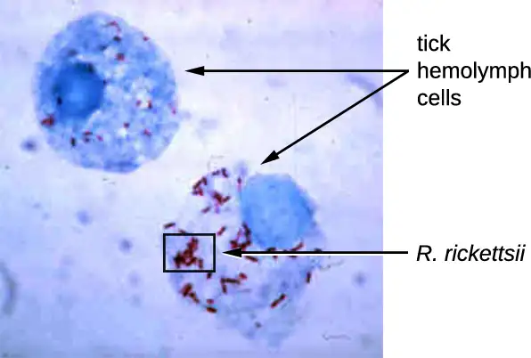
Another species of Rickettsia, R. prowazekii, is spread by lice. It causes epidemic typhus, a severe infectious disease common during warfare and mass migrations of people. R. prowazekii infects human endothelium cells, causing inflammation of the inner lining of blood vessels, high fever, abdominal pain, and sometimes delirium. A relative, R. typhi, causes a less severe disease known as murine or endemic typhus, which is still observed in the southwestern United States during warm seasons.
Table 4.2 summarizes the characteristics of important genera of Alphaproteobacteria.
Table 4.2
| Class Alphaproteobacteria | ||
|---|---|---|
| Genus | Microscopic Morphology | Unique Characteristics |
| Agrobacterium | Gram-negative bacillus | Plant pathogen; one species, A. tumefaciens, causes tumors in plants |
| Bartonella | Gram-negative, pleomorphic, flagellated coccobacillus | Facultative intracellular bacteria, transmitted by lice and fleas, cause trench fever and cat scratch disease in humans |
| Brucella | Gram-negative, small, flagellated coccobacillus | Facultative intracellular bacteria, transmitted by contaminated milk from infected cows, cause brucellosis in cattle and humans |
| Caulobacter | Gram-negative bacillus | Used in studies on cellular adaptation and differentiation because of its peculiar life cycle (during cell division, forms “swarm” cells and “stalked” cells) |
| Ehrlichia | Very small, gram-negative, coccoid or ovoid bacteria | Obligatory intracellular bacteria; can be transported from cell to cell; transmitted by ticks; cause ehrlichiosis (destruction of white blood cells and inflammation) in humans and dogs |
| Hyphomicrobium | Gram-negative bacilli; grows from a stalk | Similar to Caulobacter |
| Methylocystis | Gram-negative, coccoid or short bacilli | Nitrogen-fixing aerobic bacteria |
| Rhizobium | Gram-negative, rectangular bacilli with rounded ends forming clusters | Nitrogen-fixing bacteria that live in soil and form symbiotic relationship with roots of legumes (e.g., clover, alfalfa, and beans) |
| Rickettsia | Gram-negative, highly pleomorphic bacteria (may be cocci, rods, or threads) | Obligate intracellular bacteria; transmitted by ticks; may cause Rocky Mountain spotted fever and typhus |
Check Your Understanding
- What is a common characteristic among the human pathogenic Alphaproteobacteria?
Betaproteobacteria¶
Betaproteobacteria are a diverse group of bacteria. The different bacterial species within this group utilize a wide range of metabolic strategies and can survive in a range of environments. Some genera include species that are human pathogens, able to cause severe, sometimes life-threatening disease. The genus Neisseria, for example, includes the bacteria N. gonorrhoeae, the causative agent of the STI gonorrhea, and N. meningitides, the causative agent of bacterial meningitis.
Neisseria are cocci that live on mucosal surfaces of the human body. They are fastidious, or difficult to culture, and they require high levels of moisture, nutrient supplements, and carbon dioxide. Also, Neisseria are microaerophilic, meaning that they require low levels of oxygen. For optimal growth and for the purposes of identification, Neisseria spp. are grown on chocolate agar (i.e., agar supplemented by partially hemolyzed red blood cells). Their characteristic pattern of growth in culture is diplococcal: pairs of cells resembling coffee beans (Figure 4.5).
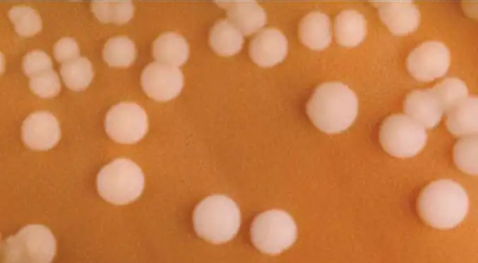
The pathogen responsible for pertussis (whooping cough) is also a member of Betaproteobacteria. The bacterium Bordetella pertussis, from the order Burkholderiales, produces several toxins that paralyze the movement of cilia in the human respiratory tract and directly damage cells of the respiratory tract, causing a severe cough.
Table 4.3 summarizes the characteristics of important genera of Betaproteobacteria.
Table 4.3
| Class Betaproteobacteria | ||
|---|---|---|
| Example Genus | Microscopic Morphology | Unique Characteristics |
| Bordetella | A small, gram-negative coccobacillus | Aerobic, very fastidious; B. pertussis causes pertussis (whooping cough) |
| Burkholderia | Gram-negative bacillus | Aerobic, aquatic, cause diseases in horses and humans (especially patients with cystic fibrosis); agents of nosocomial infections |
| Leptothrix | Gram-negative, sheathed, filamentous bacillus | Aquatic; oxidize iron and manganese; can live in wastewater treatment plants and clog pipes |
| Neisseria | Gram-negative, coffee bean-shaped coccus forming pairs | Require moisture and high concentration of carbon dioxide; oxidase positive, grow on chocolate agar; pathogenic species cause gonorrhea and meningitis |
| Thiobacillus | Gram-negative bacillus | Thermophilic, acidophilic, strictly aerobic bacteria; oxidize iron and sulfur |
Check Your Understanding
- Why are Neisseria classified as microaerophilic?
Clinical Focus: Part 2
When Marsha finally went to the doctor’s office, the physician listened to her breathing through a stethoscope. He heard some crepitation (a crackling sound) in her lungs, so he ordered a chest radiograph and asked the nurse to collect a sputum sample for microbiological evaluation and cytology. The radiologic evaluation found cavities, opacities, and a particular pattern of distribution of abnormal material (Figure 4.6).
- What are some possible diseases that could be responsible for Marsha’s radiograph results?
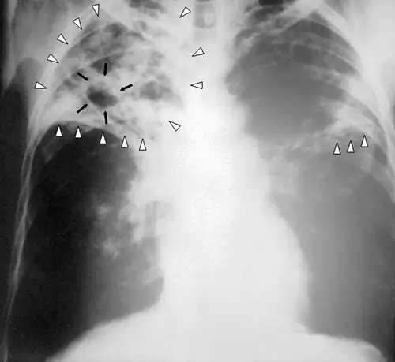
Jump to the next Clinical Focus box. Go back to the previous Clinical Focus box.
Gammaproteobacteria¶
The most diverse class of gram-negative bacteria is Gammaproteobacteria, and it includes a number of human pathogens. For example, a large and diverse family, Pseudomonaceae, includes the genus Pseudomonas. Within this genus is the species P. aeruginosa, a pathogen responsible for diverse infections in various regions of the body. P. aeruginosa is a strictly aerobic, nonfermenting, highly motile bacterium. It often infects wounds and burns, can be the cause of chronic urinary tract infections, and can be an important cause of respiratory infections in patients with cystic fibrosis or patients on mechanical ventilators. Infections by P. aeruginosa are often difficult to treat because the bacterium is resistant to many antibiotics and has a remarkable ability to form biofilms. Other representatives of Pseudomonas include the fluorescent (glowing) bacterium P. fluorescens and the soil bacteria P. putida, which is known for its ability to degrade xenobiotics (substances not naturally produced or found in living organisms).
The Pasteurellaceae also includes several clinically relevant genera and species. This family includes several bacteria that are human and/or animal pathogens. For example, Pasteurella haemolytica causes severe pneumonia in sheep and goats. P. multocida is a species that can be transmitted from animals to humans through bites, causing infections of the skin and deeper tissues. The genus Haemophilus contains two human pathogens, H. influenzae and H. ducreyi. Despite its name, H. influenzae does not cause influenza (which is a viral disease). H. influenzae can cause both upper and lower respiratory tract infections, including sinusitis, bronchitis, ear infections, and pneumonia. Before the development of effective vaccination, strains of H. influenzae were a leading cause of more invasive diseases, like meningitis in children. H. ducreyi causes the STI known as chancroid.
The order Vibrionales includes the human pathogen Vibrio cholerae. This comma-shaped aquatic bacterium thrives in highly alkaline environments like shallow lagoons and sea ports. A toxin produced by V. cholerae causes hypersecretion of electrolytes and water in the large intestine, leading to profuse watery diarrhea and dehydration. V. parahaemolyticus is also a cause of gastrointestinal disease in humans, whereas V. vulnificus causes serious and potentially life-threatening cellulitis (infection of the skin and deeper tissues) and blood-borne infections. Another representative of Vibrionales, Aliivibrio fischeri, engages in a symbiotic relationship with squid. The squid provides nutrients for the bacteria to grow and the bacteria produce bioluminescence that protects the squid from predators (Figure 4.7).
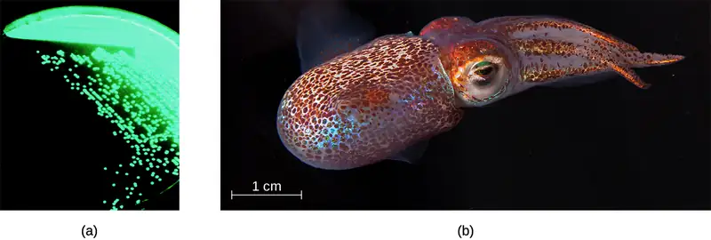
The genus Legionella also belongs to the Gammaproteobacteria. L. pneumophila, the pathogen responsible for Legionnaires disease, is an aquatic bacterium that tends to inhabit pools of warm water, such as those found in the tanks of air conditioning units in large buildings (Figure 4.8). Because the bacteria can spread in aerosols, outbreaks of Legionnaires disease often affect residents of a building in which the water has become contaminated with Legionella. In fact, these bacteria derive their name from the first known outbreak of Legionnaires disease, which occurred in a hotel hosting an American Legion veterans’ association convention in Philadelphia in 1976.
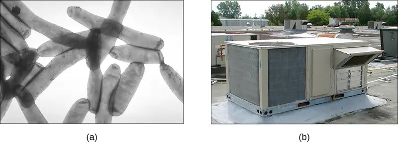
Enterobacteriaceae is a large family of enteric (intestinal) bacteria belonging to the Gammaproteobacteria. They are facultative anaerobes and are able to ferment carbohydrates. Within this family, microbiologists recognize two distinct categories. The first category is called the coliforms, after its prototypical bacterium species, Escherichia coli. Coliforms are able to ferment lactose completely (i.e., with the production of acid and gas). The second category, noncoliforms, either cannot ferment lactose or can only ferment it incompletely (producing either acid or gas, but not both). The noncoliforms include some notable human pathogens, such as Salmonella spp., Shigella spp., and Yersinia pestis.
E. coli has been perhaps the most studied bacterium since it was first described in 1886 by Theodor Escherich (1857–1911). Many strains of E. coli are in mutualistic relationships with humans. However, some strains produce a potentially deadly toxin called Shiga toxin. Shiga toxin is one of the most potent bacterial toxins identified. Upon entering target cells, Shiga toxin interacts with ribosomes, stopping protein synthesis. Lack of protein synthesis leads to cellular death and hemorrhagic colitis, characterized by inflammation of intestinal tract and bloody diarrhea. In the most severe cases, patients can develop a deadly hemolytic uremic syndrome. Other E. coli strains may cause traveler’s diarrhea, a less severe but very widespread disease.
The genus Salmonella, which belongs to the noncoliform group of Enterobacteriaceae, is interesting in that there is still no consensus about how many species it includes. Scientists have reclassified many of the groups they once thought to be species as serotypes (also called serovars), which are strains or variations of the same species of bacteria. Their classification is based on patterns of reactivity by animal antisera against molecules on the surface of the bacterial cells. A number of serotypes of Salmonella can cause salmonellosis, characterized by inflammation of the small and the large intestine, accompanied by fever, vomiting, and diarrhea. The species S. enterobacterica (serovar typhi) causes typhoid fever, with symptoms including fever, abdominal pain, and skin rashes (Figure 4.9).
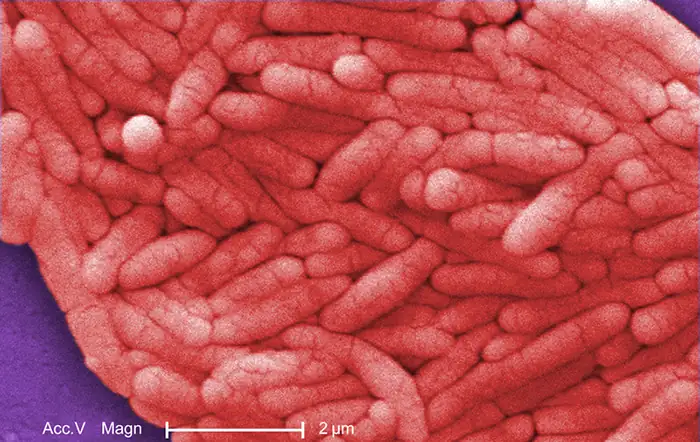
Table 4.4 summarizes the characteristics of important genera of Gammaproteobacteria.
Table 4.4
| Class Gammaproteobacteria | ||
|---|---|---|
| Example Genus | Microscopic Morphology | Unique Characteristics |
| Beggiatoa | Gram-negative bacteria; disc-shaped or cylindrical | Aquatic, live in water with high content of hydrogen disulfide; can cause problems for sewage treatment |
| Coxiella | Small, gram-negative bacillus | Obligatory intracellular bacteria; cause Q fever; potential for use as biological weapon |
| Enterobacter | Gram-negative bacillus | Facultative anaerobe; cause urinary and respiratory tract infections in hospitalized patients; implicated in the pathogenesis of obesity |
| Erwinia | Gram-negative bacillus | Plant pathogen causing leaf spots and discoloration; may digest cellulose; prefer relatively low temperatures (25–30 °C) |
| Escherichia | Gram-negative bacillus | Facultative anaerobe; inhabit the gastrointestinal tract of warm-blooded animals; some strains are mutualists, producing vitamin K; others, like serotype E. coli O157:H7, are pathogens; E. coli has been a model organism for many studies in genetics and molecular biology |
| Hemophilus | Gram-negative bacillus | Pleomorphic, may appear as coccobacillus, aerobe, or facultative anaerobe; grow on blood agar; pathogenic species can cause respiratory infections, chancroid, and other diseases |
| Klebsiella | Gram-negative bacillus; appears rounder and thicker than other members of Enterobacteriaceae | Facultative anaerobe, encapsulated, nonmotile; pathogenic species may cause pneumonia, especially in people with alcoholism |
| Legionella | Gram-negative bacillus | Fastidious, grow on charcoal-buffered yeast extract; L. pneumophila causes Legionnaires disease |
| Methylomonas | Gram-negative bacillus | Use methane as source of carbon and energy |
| Proteus | Gram-negative bacillus (pleomorphic) | Common inhabitants of the human gastrointestinal tract; motile; produce urease; opportunistic pathogens; may cause urinary tract infections and sepsis |
| Pseudomonas | Gram-negative bacillus | Aerobic; versatile; produce yellow and blue pigments, making them appear green in culture; opportunistic, antibiotic-resistant pathogens may cause wound infections, hospital-acquired infections, and secondary infections in patients with cystic fibrosis |
| Serratia | Gram-negative bacillus | Motile; may produce red pigment; opportunistic pathogens responsible for a large number of hospital-acquired infections |
| Shigella | Gram-negative bacillus | Nonmotile; dangerously pathogenic; produce Shiga toxin, which can destroy cells of the gastrointestinal tract; can cause dysentery |
| Vibrio | Gram-negative, comma- or curved rod-shaped bacteria | Inhabit seawater; flagellated, motile; may produce toxin that causes hypersecretion of water and electrolytes in the gastrointestinal tract; some species may cause serious wound infections |
| Yersinia | Gram-negative bacillus | Carried by rodents; human pathogens; Y. pestis causes bubonic plague and pneumonic plague; Y. enterocolitica can be a pathogen causing diarrhea in humans |
Check Your Understanding
- List two families of Gammaproteobacteria.
Deltaproteobacteria¶
The Deltaproteobacteria is a small class of gram-negative Proteobacteria that includes sulfate-reducing bacteria (SRBs), so named because they use sulfate as the final electron acceptor in the electron transport chain. Few SRBs are pathogenic. However, the SRB Desulfovibrio orale is associated with periodontal disease (disease of the gums).
Deltaproteobacteria also includes the genus Bdellovibrio, species of which are parasites of other gram-negative bacteria. Bdellovibrio invades the cells of the host bacterium, positioning itself in the periplasm, the space between the plasma membrane and the cell wall, feeding on the host’s proteins and polysaccharides. The infection is lethal for the host cells.
Another type of Deltaproteobacteria, myxobacteria, lives in the soil, scavenging inorganic compounds. Motile and highly social, they interact with other bacteria within and outside their own group. They can form multicellular, macroscopic “fruiting bodies” (Figure 4.10), structures that are still being studied by biologists and bacterial ecologists.11 These bacteria can also form metabolically inactive myxospores.
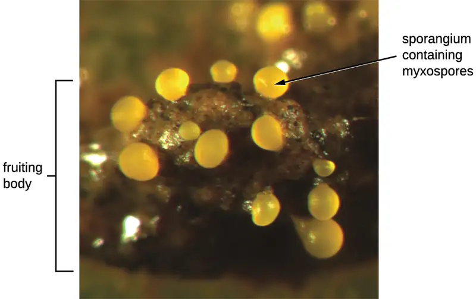
Table 4.5 summarizes the characteristics of several important genera of Deltaproteobacteria.
Table 4.5
| Class Deltaproteobacteria | ||
|---|---|---|
| Genus | Microscopic Morphology | Unique characteristics |
| Bdellovibrio | Gram-negative, comma-shaped rod | Obligate aerobes; motile; parasitic (infecting other bacteria) |
| Desulfovibrio (formerly Desufuromonas) | Gram-negative, comma-shaped rod | Reduce sulfur; can be used for removal of toxic and radioactive waste |
| Myxobacterium | Gram-negative, coccoid bacteria forming colonies (swarms) | Live in soil; can move by gliding; used as a model organism for studies of intercellular communication (signaling) |
Check Your Understanding
- What type of Deltaproteobacteria forms fruiting bodies?
Epsilonproteobacteria¶
The smallest class of Proteobacteria is Epsilonproteobacteria, which are gram-negative microaerophilic bacteria (meaning they only require small amounts of oxygen in their environment). Two clinically relevant genera of Epsilonproteobacteria are Campylobacter and Helicobacter, both of which include human pathogens. Campylobacter can cause food poisoning that manifests as severe enteritis (inflammation in the small intestine). This condition, caused by the species C. jejuni, is rather common in developed countries, usually because of eating contaminated poultry products. Chickens often harbor C. jejuni in their gastrointestinal tract and feces, and their meat can become contaminated during processing.
Within the genus Helicobacter, the helical, flagellated bacterium H. pylori has been identified as a beneficial member of the stomach microbiota, but it is also the most common cause of chronic gastritis and ulcers of the stomach and duodenum (Figure 4.11). Studies have also shown that H. pylori is linked to stomach cancer.12 H. pylori is somewhat unusual in its ability to survive in the highly acidic environment of the stomach. It produces urease and other enzymes that modify its environment to make it less acidic.
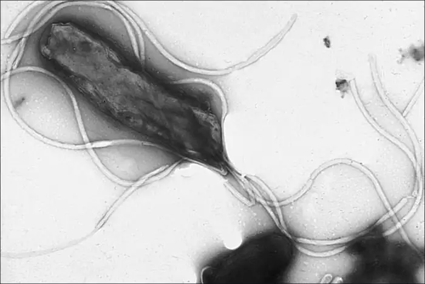
Table 4.6 summarizes the characteristics of the most clinically relevant genera of Epsilonproteobacteria.
Table 4.6
| Class Epsilonproteobacteria | ||
|---|---|---|
| Example Genus | Microscopic Morphology | Unique Characteristics |
| Campylobacter | Gram-negative, spiral-shaped rod | Aerobic (microaerophilic); often infects chickens; may infect humans via undercooked meat, causing severe enteritis |
| Helicobacter | Gram-negative, spiral-shaped rod | Aerobic (microaerophilic) bacterium; can damage the inner lining of the stomach, causing chronic gastritis, peptic ulcers, and stomach cancer |
Check Your Understanding
- Name two Epsilonproteobacteria that cause gastrointestinal disorders.
4.3 Nonproteobacteria Gram-Negative Bacteria and Phototrophic Bacteria¶
Learning Objectives
By the end of this section, you will be able to:
- Describe the unique features of nonproteobacteria gram-negative bacteria
- Give an example of a nonproteobacteria bacterium in each category
- Describe the unique features of phototrophic bacteria
- Identify phototrophic bacteria
The majority of the gram-negative bacteria belong to the phylum Proteobacteria, discussed in the previous section. Those that do not are called the nonproteobacteria. In this section, we will describe four classes of gram-negative nonproteobacteria: Chlamydia, the spirochetes, the CFB group, and the Planctomycetes. A diverse group of phototrophic bacteria that includes Proteobacteria and nonproteobacteria will be discussed at the end of this section.
Chlamydia¶
C. trachomatis is a human pathogen that causes trachoma, a disease of the eyes, often leading to blindness. C. trachomatis also causes the sexually transmitted disease lymphogranuloma venereum (LGV). This disease is often mildly symptomatic, manifesting as regional lymph node swelling, or it may be asymptomatic, but it is extremely contagious and is common on college campuses.
Members of the genus Chlamydia are gram-negative, obligate intracellular pathogens that are extremely resistant to the cellular defenses, giving them the ability to spread from host to host rapidly via elementary bodies. The metabolically and reproductively inactive elementary bodies are the endospore-like form of intracellular bacteria that enter an epithelial cell, where they become active. Figure 4.12 illustrates the life cycle of Chlamydia.
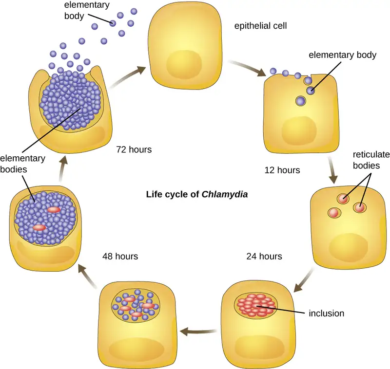
Spirochetes¶
Spirochetes are characterized by their long (up to 250 μm), spiral-shaped bodies. Most spirochetes are also very thin, which makes it difficult to examine gram-stained preparations under a conventional brightfield microscope. Darkfield fluorescent microscopy is typically used instead. Spirochetes are also difficult or even impossible to culture. They are highly motile, using their axial filament to propel themselves. The axial filament is similar to a flagellum, but it wraps around the cell and runs inside the cell body of a spirochete in the periplasmic space between the outer membrane and the plasma membrane (Figure 4.13).
![A light micrograph of long spiral shaped cells. A TEM cross-section of these shows a circle outlined by a cell membrane. Inside the cell is the cytoplasm and a darker region labeled nucleoid. Outside of this is the periplasmic space and outside of that is an outer membrane. A bulge within the periplasmic space is labeled axial filament. Small dots within the axial filament are labeled endoflagella. An SEM from the original light micrograph shows what looks like a thin rope wound around a thicker rope. The thin rope is labeled axial filament.](img/osc-microbio-04-03-spirochete.webp)
Several genera of spirochetes include human pathogens. For example, the genus Treponema includes a species T. pallidum, which is further classified into four subspecies: T. pallidum pallidum, T. pallidum pertenue, T. pallidum carateum, and T. pallidum endemicum. The subspecies T. pallidum pallidum causes the sexually transmitted infection known as syphilis, the third most prevalent sexually transmitted bacterial infection in the United States, after chlamydia and gonorrhea. The other subspecies of T. pallidum cause tropical infectious diseases of the skin, bones, and joints.
Another genus of spirochete, Borrelia, contains a number of pathogenic species. B. burgdorferi causes Lyme disease, which is transmitted by several genera of ticks (notably Ixodes and Amblyomma) and often produces a “bull’s eye” rash, fever, fatigue, and, sometimes, debilitating arthritis. B. recurrens causes a condition known as relapsing fever. Appendix D lists the genera, species, and related diseases for spirochetes.
Check Your Understanding
- Why do scientists typically use darkfield fluorescent microscopy to visualize spirochetes?
Cytophaga, Fusobacterium, and Bacteroides¶
The gram-negative nonproteobacteria of the genera Cytophaga, Fusobacterium, and Bacteroides are classified together as a phylum and called the CFB group. Although they are phylogenetically diverse, bacteria of the CFB group share some similarities in the sequence of nucleotides in their DNA. They are rod-shaped bacteria adapted to anaerobic environments, such as the tissue of the gums, gut, and rumen of ruminating animals. CFB bacteria are avid fermenters, able to process cellulose in rumen, thus enabling ruminant animals to obtain carbon and energy from grazing.
Cytophaga are motile aquatic bacteria that glide. Fusobacteria inhabit the human mouth and may cause severe infectious diseases. The largest genus of the CFB group is Bacteroides, which includes dozens of species that are prevalent inhabitants of the human large intestine, making up about 30% of the entire gut microbiome (Figure 4.14). One gram of human feces contains up to 100 billion Bacteroides cells. Most Bacteroides are mutualistic. They benefit from nutrients they find in the gut, and humans benefit from their ability to prevent pathogens from colonizing the large intestine. Indeed, when populations of Bacteroides are reduced in the gut—as often occurs when a patient takes antibiotics—the gut becomes a more favorable environment for pathogenic bacteria and fungi, which can cause secondary infections.
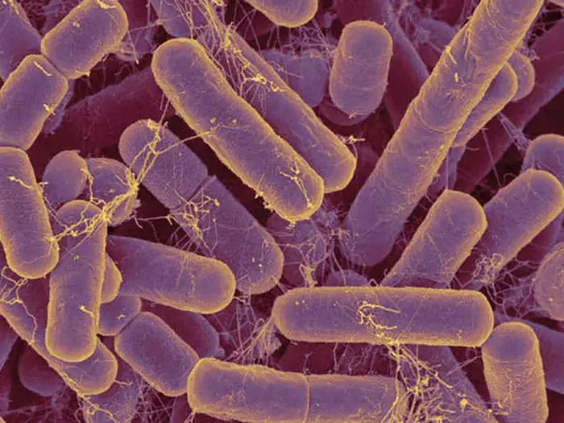
Only a few species of Bacteroides are pathogenic. B. melaninogenicus, for example, can cause wound infections in patients with weakened immune systems.
Check Your Understanding
- Why are Cytophaga, Fusobacterium, and Bacteroides classified together as the CFB group?
Planctomycetes¶
The Planctomycetes are found in aquatic environments, inhabiting freshwater, saltwater, and brackish water. Planctomycetes are unusual in that they reproduce by budding, meaning that instead of one maternal cell splitting into two equal daughter cells in the process of binary fission, the mother cell forms a bud that detaches from the mother cell and lives as an independent cell. These so-called swarmer cells are motile and not attached to a surface. However, they will soon differentiate into sessile (immobile) cells with an appendage called a holdfast that allows them to attach to surfaces in the water (Figure 4.15). Only the sessile cells are able to reproduce.
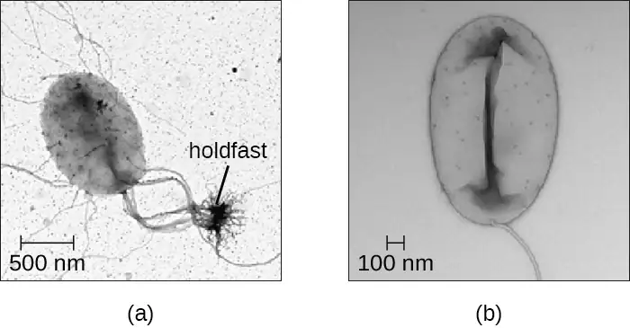
Table 4.7 summarizes the characteristics of some of the most clinically relevant genera of nonproteobacteria.
Table 4.7
| Nonproteobacteria | ||
|---|---|---|
| Example Genus | Microscopic Morphology | Unique Characteristics |
| Chlamydia | Gram-negative, coccoid or ovoid bacterium | Obligatory intracellular bacteria; some cause chlamydia, trachoma, and pneumonia |
| Bacteroides | Gram-negative bacillus | Obligate anaerobic bacteria; abundant in the human gastrointestinal tract; usually mutualistic, although some species are opportunistic pathogens |
| Cytophaga | Gram-negative bacillus | Motile by gliding; live in soil or water; decompose cellulose; may cause disease in fish |
| Fusobacterium | Gram-negative bacillus with pointed ends | Anaerobic; form; biofilms; some species cause disease in humans (periodontitis, ulcers) |
| Leptospira | Spiral-shaped bacterium (spirochetes); gram negative-like (better viewed by darkfield microscopy); very thin | Aerobic, abundant in shallow water reservoirs; infect rodents and domestic animals; can be transmitted to humans by infected animals’ urine; may cause severe disease |
| Borrelia | Gram-negative-like spirochete; very thin; better viewed by darkfield microscopy | B. burgdorferi causes Lyme disease and B. recurrens causes relapsing fever |
| Treponema | Gram-negative-like spirochete; very thin; better viewed by darkfield microscopy | Motile; do not grow in culture; T. pallidum (subspecies T. pallidum pallidum) causes syphilis |
Check Your Understanding
- How do Planctomycetes reproduce?
Phototrophic Bacteria¶
The phototrophic bacteria are a large and diverse category of bacteria that do not represent a taxon but, rather, a group of bacteria that use sunlight as their primary source of energy. This group contains both Proteobacteria and nonproteobacteria. They use solar energy to synthesize ATP through photosynthesis. When they produce oxygen, they perform oxygenic photosynthesis. When they do not produce oxygen, they perform anoxygenic photosynthesis. With the exception of some cyanobacteria, the majority of phototrophic bacteria perform anoxygenic photosynthesis.
One large group of phototrophic bacteria includes the purple or green bacteria that perform photosynthesis with the help of bacteriochlorophylls, which are green, purple, or blue pigments similar to chlorophyll in plants. Some of these bacteria have a varying amount of red or orange pigments called carotenoids. Their color varies from orange to red to purple to green (Figure 4.16), and they are able to absorb light of various wavelengths. Traditionally, these bacteria are classified into sulfur and nonsulfur bacteria; they are further differentiated by color.
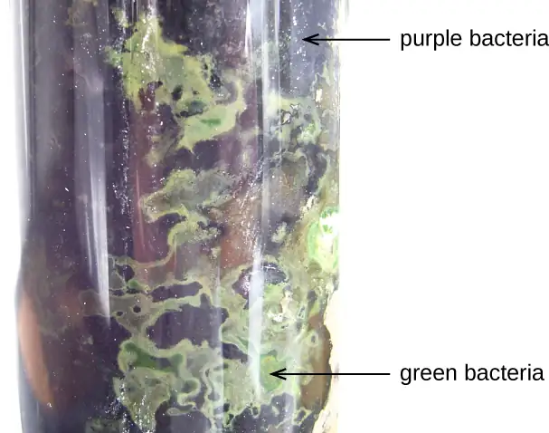
The sulfur bacteria perform anoxygenic photosynthesis, using sulfites as electron donors and releasing free elemental sulfur. Nonsulfur bacteria use organic substrates, such as succinate and malate, as donors of electrons.
The purple sulfur bacteria oxidize hydrogen sulfide into elemental sulfur and sulfuric acid and get their purple color from the pigments bacteriochlorophylls and carotenoids. Bacteria of the genus Chromatium are purple sulfur Gammaproteobacteria. These microorganisms are strict anaerobes and live in water. They use carbon dioxide as their only source of carbon, but their survival and growth are possible only in the presence of sulfites, which they use as electron donors. Chromatium has been used as a model for studies of bacterial photosynthesis since the 1950s.13
The green sulfur bacteria use sulfide for oxidation and produce large amounts of green bacteriochlorophyll. The genus Chlorobium is a green sulfur bacterium. These bacteria use at least four types of chlorophyll for photosynthesis. The most prevalent of these, bacteriochlorophyll, is stored in special vesicle-like organelles called chlorosomes.
Purple nonsulfur bacteria are similar to purple sulfur bacteria, except that they use hydrogen rather than hydrogen sulfide for oxidation. Among the purple nonsulfur bacteria is the genus Rhodospirillum. These microorganisms are facultative anaerobes, which are actually pink rather than purple, and can metabolize (“fix”) nitrogen. They may be valuable in the field of biotechnology because of their potential ability to produce biological plastic and hydrogen fuel.14
The green nonsulfur bacteria are similar to green sulfur bacteria but they use substrates other than sulfides for oxidation. Chloroflexus is an example of a green nonsulfur bacterium. It often has an orange color when it grows in the dark, but it becomes green when it grows in sunlight. It stores bacteriochlorophyll in chlorosomes, similar to Chlorobium, and performs anoxygenic photosynthesis, using organic sulfites (low concentrations) or molecular hydrogen as electron donors, so it can survive in the dark if oxygen is available. Chloroflexus does not have flagella but can glide, like Cytophaga. It grows at a wide range of temperatures, from 35 °C to 70 °C, thus can be thermophilic.
Another large, diverse group of phototrophic bacteria compose the phylum Cyanobacteria; they get their blue-green color from the chlorophyll contained in their cells (Figure 4.17). Species of this group perform oxygenic photosynthesis, producing megatons of gaseous oxygen. Scientists hypothesize that cyanobacteria played a critical role in the change of our planet’s anoxic atmosphere 1–2 billion years ago to the oxygen-rich environment we have today.15
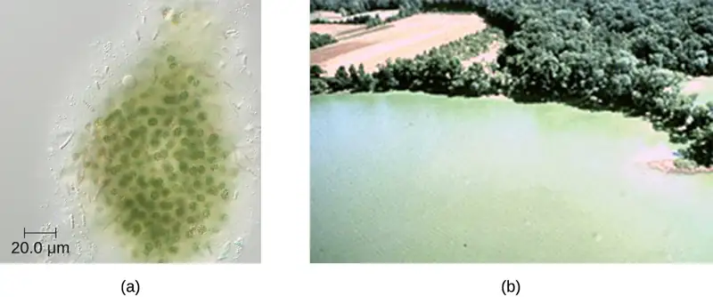
Cyanobacteria have other remarkable properties. Amazingly adaptable, they thrive in many habitats, including marine and freshwater environments, soil, and even rocks. Roseli Ocampo-Friedmann and Imre Friedman identified photosynthetic cyanobacteria living within rocks in Antarctica's Dry Valleys, a barren, snowless region with extremely low precipitation and an average temperature of -15 degrees Celsius. The discovery was the basis for new theories and practices in the area of astrobiology (both researchers went on to work for NASA), considering that Earth's polar deserts have conditions resembling those on Mars, which may provide a home to organisms similar to cyanobacteria. They can live as unicellular organisms or in colonies, and they can be filamentous, forming sheaths or biofilms. Many of them fix nitrogen, converting molecular nitrogen into nitrites and nitrates that other bacteria, plants, and animals can use. The reactions of nitrogen fixation occur in specialized cells called heterocysts.
Photosynthesis in Cyanobacteria is oxygenic, using the same type of chlorophyll a found in plants and algae as the primary photosynthetic pigment. Cyanobacteria also use phycocyanin and cyanophycin, two secondary photosynthetic pigments that give them their characteristic blue color. They are located in special organelles called phycobilisomes and in folds of the cellular membrane called thylakoids, which are remarkably similar to the photosynthetic apparatus of plants. Scientists hypothesize that plants originated from endosymbiosis of ancestral eukaryotic cells and ancestral photosynthetic bacteria.16 Cyanobacteria are also an interesting object of research in biochemistry,17 with studies investigating their potential as biosorbents18 and products of human nutrition.19
Unfortunately, cyanobacteria can sometimes have a negative impact on human health. Genera such as Microcystis can form harmful cyanobacterial blooms, forming dense mats on bodies of water and producing large quantities of toxins that can harm wildlife and humans. These toxins have been implicated in tumors of the liver and diseases of the nervous system in animals and humans.20
Table 4.8 summarizes the characteristics of important phototrophic bacteria.
Table 4.8
| Phototrophic Bacteria | |||||
|---|---|---|---|---|---|
| Phylum | Class | Example Genus or Species | Common Name | Oxygenic or Anoxygenic | Sulfur Deposition |
| Cyanobacteria | Cyanophyceae | Microcystisaeruginosa | Blue-green bacteria | Oxygenic | None |
| Chlorobi | Chlorobia | Chlorobium | Green sulfur bacteria | Anoxygenic | Outside the cell |
| Chloroflexi (Division) | Chloroflexi | Chloroflexus | Green nonsulfur bacteria | Anoxygenic | None |
| Proteobacteria | Alphaproteobacteria | Rhodospirillum | Purple nonsulfur bacteria | Anoxygenic | None |
| Betaproteobacteria | Rhodocyclus | Purple nonsulfur bacteria | Anoxygenic | None | |
| Gammaproteobacteria | Chromatium | Purple sulfur bacteria | Anoxygenic | Inside the cell | |
Check Your Understanding
- What characteristic makes phototrophic bacteria different from other prokaryotes?
4.4 Gram-Positive Bacteria¶
Learning Objectives
By the end of this section, you will be able to:
- Describe the unique features of each category of high G+C and low G+C gram-positive bacteria
- Identify similarities and differences between high G+C and low G+C bacterial groups
- Give an example of a bacterium of high G+C and low G+C group commonly associated with each category
Prokaryotes are identified as gram-positive if they have a multiple layer matrix of peptidoglycan forming the cell wall. Crystal violet, the primary stain of the Gram stain procedure, is readily retained and stabilized within this matrix, causing gram-positive prokaryotes to appear purple under a brightfield microscope after Gram staining. For many years, the retention of Gram stain was one of the main criteria used to classify prokaryotes, even though some prokaryotes did not readily stain with either the primary or secondary stains used in the Gram stain procedure.
Advances in nucleic acid biochemistry have revealed additional characteristics that can be used to classify gram-positive prokaryotes, namely the guanine to cytosine ratios (G+C) in DNA and the composition of 16S rRNA subunits. Microbiologists currently recognize two distinct groups of gram-positive, or weakly staining gram-positive, prokaryotes. The class Actinobacteria comprises the high G+C gram-positive bacteria, which have more than 50% guanine and cytosine nucleotides in their DNA. The class Bacilli comprises low G+C gram-positive bacteria, which have less than 50% of guanine and cytosine nucleotides in their DNA.
Actinobacteria: High G+C Gram-Positive Bacteria¶
The name Actinobacteria comes from the Greek words for rays and small rod, but Actinobacteria are very diverse. Their microscopic appearance can range from thin filamentous branching rods to coccobacilli. Some Actinobacteria are very large and complex, whereas others are among the smallest independently living organisms. Most Actinobacteria live in the soil, but some are aquatic. The vast majority are aerobic. One distinctive feature of this group is the presence of several different peptidoglycans in the cell wall.
The genus Actinomyces is a much studied representative of Actinobacteria. Actinomyces spp. play an important role in soil ecology, and some species are human pathogens. A number of Actinomyces spp. inhabit the human mouth and are opportunistic pathogens, causing infectious diseases like periodontitis (inflammation of the gums) and oral abscesses. The species A. israelii is an anaerobe notorious for causing endocarditis (inflammation of the inner lining of the heart) (Figure 4.18).
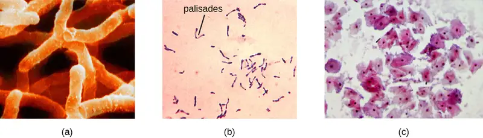
The genus Mycobacterium is represented by bacilli covered with a mycolic acid coat. This waxy coat protects the bacteria from some antibiotics, prevents them from drying out, and blocks penetration by Gram stain reagents (see Staining Microscopic Specimens). Because of this, a special acid-fast staining procedure is used to visualize these bacteria. The genus Mycobacterium is an important cause of a diverse group of infectious diseases. M. tuberculosis is the causative agent of tuberculosis, a disease that primarily impacts the lungs but can infect other parts of the body as well. It has been estimated that one-third of the world’s population has been infected with M. tuberculosis and millions of new infections occur each year. Treatment of M. tuberculosis is challenging and requires patients to take a combination of drugs for an extended time. Complicating treatment even further is the development and spread of multidrug-resistant strains of this pathogen.
Another pathogenic species, M. leprae, is the cause of Hansen’s disease (leprosy), a chronic disease that impacts peripheral nerves and the integrity of the skin and mucosal surface of the respiratory tract. Loss of pain sensation and the presence of skin lesions increase susceptibility to secondary injuries and infections with other pathogens.
Bacteria in the genus Corynebacterium contain diaminopimelic acid in their cell walls, and microscopically often form palisades, or pairs of rod-shaped cells resembling the letter V. Cells may contain metachromatic granules, intracellular storage of inorganic phosphates that are useful for identification of Corynebacterium. The vast majority of Corynebacterium spp. are nonpathogenic; however, C. diphtheria is the causative agent of diphtheria, a disease that can be fatal, especially in children (Figure 4.18). C. diphtheria produces a toxin that forms a pseudomembrane in the patient’s throat, causing swelling, difficulty breathing, and other symptoms that can become serious if untreated.
The genus Bifidobacterium consists of filamentous anaerobes, many of which are commonly found in the gastrointestinal tract, vagina, and mouth. In fact, Bifidobacterium spp. constitute a substantial part of the human gut microbiota and are frequently used as probiotics and in yogurt production.
The genus Gardnerella, contains only one species, G. vaginalis. This species is defined as “gram-variable” because its small coccobacilli do not show consistent results when Gram stained (Figure 4.18). Based on its genome, it is placed into the high G+C gram-positive group. G. vaginalis can cause bacterial vaginosis; symptoms are typically mild or even undetectable, but can lead to complications during pregnancy.
Table 4.9 summarizes the characteristics of some important genera of Actinobacteria. Additional information on Actinobacteria appears in Appendix D.
Table 4.9
| Actinobacteria: High G+C Gram-Positive | ||
|---|---|---|
| Example Genus | Microscopic Morphology | Unique Characteristics |
| Actinomyces | Gram-positive bacillus; in colonies, shows fungus-like threads (hyphae) | Facultative anaerobes; in soil, decompose organic matter; in the human mouth, may cause gum disease |
| Arthrobacter | Gram-positive bacillus (at the exponential stage of growth) or coccus (in stationary phase) | Obligate aerobes; divide by “snapping,” forming V-like pairs of daughter cells; degrade phenol, can be used in bioremediation |
| Bifidobacterium | Gram-positive, filamentous actinobacterium | Anaerobes commonly found in human gut microbiota |
| Corynebacterium | Gram-positive bacillus | Aerobes or facultative anaerobes; form palisades; grow slowly; require enriched media in culture; C. diphtheriae causes diphtheria |
| Frankia | Gram-positive, fungus-like (filamentous) bacillus | Nitrogen-fixing bacteria; live in symbiosis with legumes |
| Gardnerella | Gram-variable coccobacillus | Colonize the human vagina, may alter the microbial ecology, thus leading to vaginosis |
| Micrococcus | Gram-positive coccus, form microscopic clusters | Ubiquitous in the environment and on the human skin; oxidase-positive (as opposed to morphologically similar S. aureus); some are opportunistic pathogens |
| Mycobacterium | Gram-positive, acid-fast bacillus | Slow growing, aerobic, resistant to drying and phagocytosis; covered with a waxy coat made of mycolic acid; M. tuberculosis causes tuberculosis; M. leprae causes leprosy |
| Nocardia | Weakly gram-positive bacillus; forms acid-fast branches | May colonize the human gingiva; may cause severe pneumonia and inflammation of the skin |
| Cutibacterium | Gram-positive bacillus | Aerotolerant anaerobe; slow-growing; C. acnes reproduces in the human sebaceous glands and may cause or contribute to acne |
| Rhodococcus | Gram-positive bacillus | Strict aerobe; used in industry for biodegradation of pollutants; R. fascians is a plant pathogen, and R. equi causes pneumonia in foals |
| Streptomyces | Gram-positive, fungus-like (filamentous) bacillus | Very diverse genus (>500 species); aerobic, spore-forming bacteria; scavengers, decomposers found in soil (give the soil its “earthy” odor); used in pharmaceutical industry as antibiotic producers (more than two-thirds of clinically useful antibiotics) |
Check Your Understanding
- What is one distinctive feature of Actinobacteria?
Low G+C Gram-positive Bacteria¶
The low G+C gram-positive bacteria have less than 50% guanine and cytosine in their DNA, and this group of bacteria includes a number of genera of bacteria that are pathogenic.
Clinical Focus: Part 3
Based on her symptoms, Marsha’s doctor suspected that she had a case of tuberculosis. Although less common in the United States, tuberculosis is still extremely common in many parts of the world, including Nigeria. Marsha’s work there in a medical lab likely exposed her to Mycobacterium tuberculosis, the bacterium that causes tuberculosis.
Marsha’s doctor ordered her to stay at home, wear a respiratory mask, and confine herself to one room as much as possible. He also said that Marsha had to take one semester off school. He prescribed isoniazid and rifampin, antibiotics used in a drug cocktail to treat tuberculosis, which Marsha was to take three times a day for at least three months.
- Why did the doctor order Marsha to stay home for three months?
Jump to the next Clinical Focus box. Go back to the previous Clinical Focus box.
Clostridia¶
One large and diverse class of low G+C gram-positive bacteria is Clostridia. The best studied genus of this class is Clostridium. These rod-shaped bacteria are generally obligate anaerobes that produce endospores and can be found in anaerobic habitats like soil and aquatic sediments rich in organic nutrients. The endospores may survive for many years.
Clostridium spp. produce more kinds of protein toxins than any other bacterial genus, and several species are human pathogens. C. perfringens is the third most common cause of food poisoning in the United States and is the causative agent of an even more serious disease called gas gangrene. Gas gangrene occurs when C. perfringens endospores enter a wound and germinate, becoming viable bacterial cells and producing a toxin that can cause the necrosis (death) of tissue. C. tetani, which causes tetanus, produces a neurotoxin that is able to enter neurons, travel to regions of the central nervous system where it blocks the inhibition of nerve impulses involved in muscle contractions, and cause a life-threatening spastic paralysis. C. botulinum produces botulinum neurotoxin, the most lethal biological toxin known. Botulinum toxin is responsible for rare but frequently fatal cases of botulism. The toxin blocks the release of acetylcholine in neuromuscular junctions, causing flaccid paralysis. In very small concentrations, botulinum toxin has been used to treat muscle pathologies in humans and in a cosmetic procedure to eliminate wrinkles. Clostridioides difficile is a common source of hospital-acquired infections (Figure 4.19) that can result in serious and even fatal cases of colitis (inflammation of the large intestine). Infections often occur in patients who are immunosuppressed or undergoing antibiotic therapy that alters the normal microbiota of the gastrointestinal tract. Appendix D lists the genera, species, and related diseases for Clostridia.
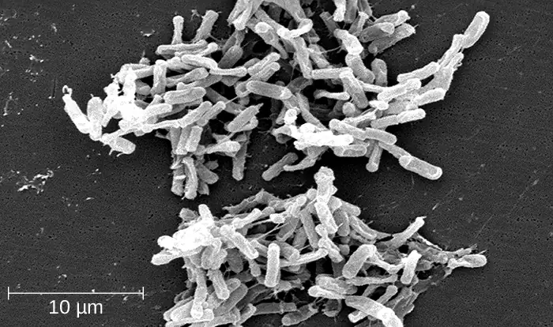
Lactobacillales¶
The order Lactobacillales comprises low G+C gram-positive bacteria that include both bacilli and cocci in the genera Lactobacillus, Leuconostoc, Enterococcus, and Streptococcus. Bacteria of the latter three genera typically are spherical or ovoid and often form chains.
Streptococcus, the name of which comes from the Greek word for twisted chain, is responsible for many types of infectious diseases in humans. Species from this genus, often referred to as streptococci, are usually classified by serotypes called Lancefield groups, and by their ability to lyse red blood cells when grown on blood agar.
S. pyogenes belongs to the Lancefield group A, β-hemolytic Streptococcus. This species is considered a pyogenic pathogen because of the associated pus production observed with infections it causes (Figure 4.20). S. pyogenes is the most common cause of bacterial pharyngitis (strep throat); it is also an important cause of various skin infections that can be relatively mild (e.g., impetigo) or life threatening (e.g., necrotizing fasciitis, also known as flesh eating disease), life threatening.
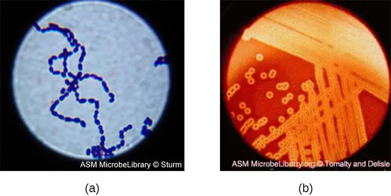
The nonpyogenic (i.e., not associated with pus production) streptococci are a group of streptococcal species that are not a taxon but are grouped together because they inhabit the human mouth. The nonpyogenic streptococci do not belong to any of the Lancefield groups. Most are commensals, but a few, such as S. mutans, are implicated in the development of dental caries.
S. pneumoniae (commonly referred to as pneumococcus), is a Streptococcus species that also does not belong to any Lancefield group. S. pneumoniae cells appear microscopically as diplococci, pairs of cells, rather than the long chains typical of most streptococci. Scientists have known since the 19th century that S. pneumoniae causes pneumonia and other respiratory infections. However, this bacterium can also cause a wide range of other diseases, including meningitis, septicemia, osteomyelitis, and endocarditis, especially in newborns, the elderly, and patients with immunodeficiency.
Bacilli¶
The name of the class Bacilli suggests that it is made up of bacteria that are bacillus in shape, but it is a morphologically diverse class that includes bacillus-shaped and cocccus-shaped genera. Among the many genera in this class are two that are very important clinically: Bacillus and Staphylococcus.
Bacteria in the genus Bacillus are bacillus in shape and can produce endospores. They include aerobes or facultative anaerobes. A number of Bacillus spp. are used in various industries, including the production of antibiotics (e.g., barnase), enzymes (e.g., alpha-amylase, BamH1 restriction endonuclease), and detergents (e.g., subtilisin).
Two notable pathogens belong to the genus Bacillus. B. anthracis is the pathogen that causes anthrax, a severe disease that affects wild and domesticated animals and can spread from infected animals to humans. Anthrax manifests in humans as charcoal-black ulcers on the skin, severe enterocolitis, pneumonia, and brain damage due to swelling. If untreated, anthrax is lethal. B. cereus, a closely related species, is a pathogen that may cause food poisoning. It is a rod-shaped species that forms chains. Colonies appear milky white with irregular shapes when cultured on blood agar (Figure 4.21). One other important species is B. thuringiensis. This bacterium produces a number of substances used as insecticides because they are toxic for insects.
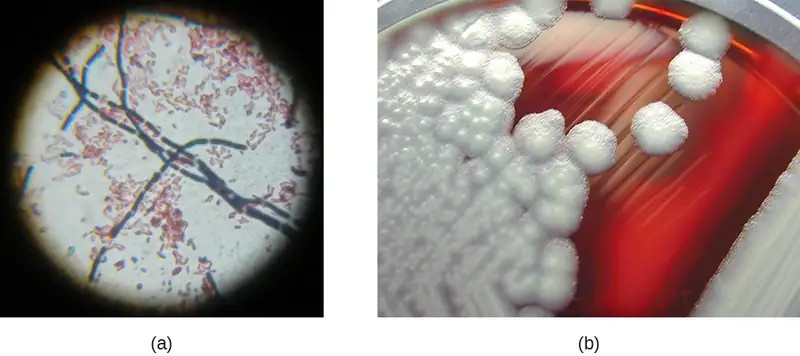
The genus Staphylococcus also belongs to the class Bacilli, even though its shape is coccus rather than a bacillus. The name Staphylococcus comes from a Greek word for bunches of grapes, which describes their microscopic appearance in culture (Figure 4.22). Staphylococcus spp. are facultative anaerobic, halophilic, and nonmotile. The two best-studied species of this genus are S. epidermidis and S. aureus.
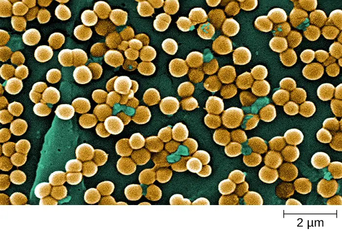
S. epidermidis, whose main habitat is the human skin, is thought to be nonpathogenic for humans with healthy immune systems, but in patients with immunodeficiency, it may cause infections in skin wounds and prostheses (e.g., artificial joints, heart valves). S. epidermidis is also an important cause of infections associated with intravenous catheters. This makes it a dangerous pathogen in hospital settings, where many patients may be immunocompromised.
Strains of S. aureus cause a wide variety of infections in humans, including skin infections that produce boils, carbuncles, cellulitis, or impetigo. Certain strains of S. aureus produce a substance called enterotoxin, which can cause severe enteritis, often called staph food poisoning. Some strains of S. aureus produce the toxin responsible for toxic shock syndrome, which can result in cardiovascular collapse and death.
Many strains of S. aureus have developed resistance to antibiotics. Some antibiotic-resistant strains are designated as methicillin-resistant S. aureus (MRSA) and vancomycin-resistant S. aureus (VRSA). These strains are some of the most difficult to treat because they exhibit resistance to nearly all available antibiotics, not just methicillin and vancomycin. Because they are difficult to treat with antibiotics, infections can be lethal. MRSA and VRSA are also contagious, posing a serious threat in hospitals, nursing homes, dialysis facilities, and other places where there are large populations of elderly, bedridden, and/or immunocompromised patients. Appendix D lists the genera, species, and related diseases for bacilli.
Mycoplasmas¶
Although Mycoplasma spp. do not possess a cell wall and, therefore, are not stained by Gram-stain reagents, this genus is still included with the low G+C gram-positive bacteria. The genus Mycoplasma includes more than 100 species, which share several unique characteristics. They are very small cells, some with a diameter of about 0.2 μm, which is smaller than some large viruses. They have no cell walls and, therefore, are pleomorphic, meaning that they may take on a variety of shapes and can even resemble very small animal cells. Because they lack a characteristic shape, they can be difficult to identify. One species, M. pneumoniae, causes the mild form of pneumonia known as “walking pneumonia” or “atypical pneumonia.” This form of pneumonia is typically less severe than forms caused by other bacteria or viruses.
Table 4.10 summarizes the characteristics of notable genera low G+C Gram-positive bacteria.
Table 4.10
| Bacilli: Low G+C Gram-Positive Bacteria | ||
|---|---|---|
| Example Genus | Microscopic Morphology | Unique Characteristics |
| Bacillus | Large, gram-positive bacillus | Aerobes or facultative anaerobes; form endospores; B. anthracis causes anthrax in cattle and humans, B. cereus may cause food poisoning |
| Clostridium | Gram-positive bacillus | Strict anaerobes; form endospores; all known species are pathogenic, causing tetanus, gas gangrene, and botulism |
| Enterococcus | Gram-positive coccus; forms microscopic pairs in culture (resembling Streptococcus pneumoniae) | Anaerobic aerotolerant bacteria, abundant in the human gut, may cause urinary tract and other infections in the nosocomial environment |
| Lactobacillus | Gram-positive bacillus | Facultative anaerobes; ferment sugars into lactic acid; part of the vaginal microbiota; used as probiotics |
| Leuconostoc | Gram-positive coccus; may form microscopic chains in culture | Fermenter, used in food industry to produce sauerkraut and kefir |
| Mycoplasma | The smallest bacteria; appear pleomorphic under electron microscope | Have no cell wall; classified as low G+C Gram-positive bacteria because of their genome; M. pneumoniae causes “walking” pneumonia |
| Staphylococcus | Gram-positive coccus; forms microscopic clusters in culture that resemble bunches of grapes | Tolerate high salt concentration; facultative anaerobes; produce catalase; S. aureus can also produce coagulase and toxins responsible for local (skin) and generalized infections |
| Streptococcus | Gram-positive coccus; forms chains or pairs in culture | Diverse genus; classified into groups based on sharing certain antigens; some species cause hemolysis and may produce toxins responsible for human local (throat) and generalized disease |
| Ureaplasma | Similar to Mycoplasma | Part of the human vaginal and lower urinary tract microbiota; may cause inflammation, sometimes leading to internal scarring and infertility |
Check Your Understanding
- Name some ways in which streptococci are classified.
- Name one pathogenic low G+C gram-positive bacterium and a disease it causes.
Clinical Focus: Resolution
Marsha’s sputum sample was sent to the microbiology lab to confirm the identity of the microorganism causing her infection. The lab also performed antimicrobial susceptibility testing (AST) on the sample to confirm that the physician has prescribed the correct antimicrobial drugs.
Direct microscopic examination of the sputum revealed acid-fast bacteria (AFB) present in Marsha’s sputum. When placed in culture, there were no signs of growth for the first 8 days, suggesting that microorganism was either dead or growing very slowly. Slow growth is a distinctive characteristic of M. tuberculosis.
After four weeks, the lab microbiologist observed distinctive colorless granulated colonies (Figure 4.23). The colonies contained AFB showing the same microscopic characteristics as those revealed during the direct microscopic examination of Marsha’s sputum. To confirm the identification of the AFB, samples of the colonies were analyzed using nucleic acid hybridization, or direct nucleic acid amplification (NAA) testing. When a bacterium is acid-fast, it is classified in the family Mycobacteriaceae. DNA sequencing of variable genomic regions of the DNA extracted from these bacteria revealed that it was high G+C. This fact served to finalize Marsha’s diagnosis as infection with M. tuberculosis. After nine months of treatment with the drugs prescribed by her doctor, Marsha made a full recovery.
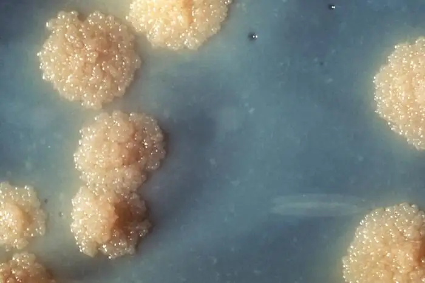
Go back to the previous Clinical Focus box.
Eye on Ethics: Biopiracy and Bioprospecting
In 1969, an employee of a Swiss pharmaceutical company was vacationing in Norway and decided to collect some soil samples. He took them back to his lab, and the Swiss company subsequently used the fungus Tolypocladium inflatum in those samples to develop cyclosporine A, a drug widely used in patients who undergo tissue or organ transplantation. The Swiss company earns more than $1 billion a year for production of cyclosporine A, yet Norway receives nothing in return—no payment to the government or benefit for the Norwegian people. Despite the fact the cyclosporine A saves numerous lives, many consider the means by which the soil samples were obtained to be an act of “biopiracy,” essentially a form of theft. Do the ends justify the means in a case like this?
Nature is full of as-yet-undiscovered bacteria and other microorganisms that could one day be used to develop new life-saving drugs or treatments.21 Pharmaceutical and biotechnology companies stand to reap huge profits from such discoveries, but ethical questions remain. To whom do biological resources belong? Should companies who invest (and risk) millions of dollars in research and development be required to share revenue or royalties for the right to access biological resources?
Compensation is not the only issue when it comes to bioprospecting. Some communities and cultures are philosophically opposed to bioprospecting, fearing unforeseen consequences of collecting genetic or biological material. Native Hawaiians, for example, are very protective of their unique biological resources.
For many years, it was unclear what rights government agencies, private corporations, and citizens had when it came to collecting samples of microorganisms from public land. Then, in 1993, the Convention on Biological Diversity granted each nation the rights to any genetic and biological material found on their own land. Scientists can no longer collect samples without a prior arrangement with the land owner for compensation. This convention now ensures that companies act ethically in obtaining the samples they use to create their products.
4.5 Deeply Branching Bacteria¶
Learning Objectives
By the end of this section, you will be able to:
- Describe the unique features of deeply branching bacteria
- Give examples of significant deeply branching bacteria
On a phylogenetic tree (see A Systematic Approach), the trunk or root of the tree represents a common ancient evolutionary ancestor, often called the last universal common ancestor (LUCA), and the branches are its evolutionary descendants. Scientists consider the deeply branching bacteria, such as the genus Acetothermus, to be the first of these non-LUCA forms of life produced by evolution some 3.5 billion years ago. When placed on the phylogenetic tree, they stem from the common root of life, deep and close to the LUCA root—hence the name “deeply branching” (Figure 4.24).
![A diagram of a phylogenetic tree. At the base is the label LUCA This branches into two branches. The branch on the left is the bacteria, the branch to the right branches again to form the archaea and Eukarya. The lowest branch of the bacteria is the acetothermus (which is starred). Branches above that include (from bottom to top): aquifex, thermotoga, green filamentous bacteria, bacteroides, cytophaga, planctomyces, gram positives, cyanobacteria, porteiobacteria and spirochetes. Branches of the arcaea from bottom to top: pyrodicticum, thermoproteus, Thermococcus, methanococcus, methanobacterium, methanosarcina, and halophies. Branches of the Eukarya from bottom to top: diplomonads, microsporidia, trichomonads, flagellates, entamoebae, slime molds, ciliates, plants, animals, and fungi.](img/osc-microbio-04-05-deepbranch.webp)
The deeply branching bacteria may provide clues regarding the structure and function of ancient and now extinct forms of life. We can hypothesize that ancient bacteria, like the deeply branching bacteria that still exist, were thermophiles or hyperthermophiles, meaning that they thrived at very high temperatures. Acetothermus paucivorans, a gram-negative anaerobic bacterium discovered in 1988 in sewage sludge, is a thermophile growing at an optimal temperature of 58 °C.22 Scientists have determined it to be the deepest branching bacterium, or the closest evolutionary relative of the LUCA (Figure 4.24).
The class Aquificae includes deeply branching bacteria that are adapted to the harshest conditions on our planet, resembling the conditions thought to dominate the earth when life first appeared. Bacteria from the genus Aquifex are hyperthermophiles, living in hot springs at a temperature higher than 90 °C. The species A. pyrophilus thrives near underwater volcanoes and thermal ocean vents, where the temperature of water (under high pressure) can reach 138 °C. Aquifex bacteria use inorganic substances as nutrients. For example, A. pyrophilus can reduce oxygen, and it is able to reduce nitrogen in anaerobic conditions. They also show a remarkable resistance to ultraviolet light and ionizing radiation. Taken together, these observations support the hypothesis that the ancient ancestors of deeply branching bacteria began evolving more than 3 billion years ago, when the earth was hot and lacked an atmosphere, exposing the bacteria to nonionizing and ionizing radiation.
The class Thermotogae is represented mostly by hyperthermophilic, as well as some mesophilic (preferring moderate temperatures), anaerobic gram-negative bacteria whose cells are wrapped in a peculiar sheath-like outer membrane called a toga. The thin layer of peptidoglycan in their cell wall has an unusual structure; it contains diaminopimelic acid and D-lysine. These bacteria are able to use a variety of organic substrates and produce molecular hydrogen, which can be used in industry. The class contains several genera, of which the best known is the genus Thermotoga. One species of this genus, T. maritima, lives near the thermal ocean vents and thrives in temperatures of 90 °C; another species, T. subterranea, lives in underground oil reservoirs.
Finally, the deeply branching bacterium Deinococcus radiodurans belongs to a genus whose name is derived from a Greek word meaning terrible berry. Nicknamed “Conan the Bacterium,” D. radiodurans is considered a polyextremophile because of its ability to survive under the many different kinds of extreme conditions—extreme heat, drought, vacuum, acidity, and radiation. It owes its name to its ability to withstand doses of ionizing radiation that kill all other known bacteria; this special ability is attributed to some unique mechanisms of DNA repair.
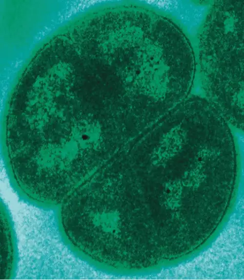
4.6 Archaea¶
Learning Objectives
By the end of this section, you will be able to:
- Describe the unique features of each category of Archaea
- Explain why archaea might not be associated with human microbiomes or pathology
- Give common examples of archaea commonly associated with unique environmental habitats
Like organisms in the domain Bacteria, organisms of the domain Archaea are all unicellular organisms. However, archaea differ structurally from bacteria in several significant ways, as discussed in Unique Characteristics of Prokaryotic Cells. To summarize:
- The archaeal cell membrane is composed of ether linkages with branched isoprene chains (as opposed to the bacterial cell membrane, which has ester linkages with unbranched fatty acids).
- Archaeal cell walls lack peptidoglycan, but some contain a structurally similar substance called pseudopeptidoglycan or pseudomurein.
- The genomes of Archaea are larger and more complex than those of bacteria.
Domain Archaea is as diverse as domain Bacteria, and its representatives can be found in any habitat. Some archaea are mesophiles, and many are extremophiles, preferring extreme hot or cold, extreme salinity, or other conditions that are hostile to most other forms of life on earth. Their metabolism is adapted to the harsh environments, and they can perform methanogenesis, for example, which bacteria and eukaryotes cannot.
The size and complexity of the archaeal genome makes it difficult to classify. Most taxonomists agree that within the Archaea, there are currently five major phyla: Crenarchaeota, Euryarchaeota, Korarchaeota, Nanoarchaeota, and Thaumarchaeota. There are likely many other archaeal groups that have not yet been systematically studied and classified.
With few exceptions, archaea are not present in the human microbiota, and none are currently known to be associated with infectious diseases in humans, animals, plants, or microorganisms. However, many play important roles in the environment and may thus have an indirect impact on human health.
Crenarchaeota¶
Crenarchaeota is a class of Archaea that is extremely diverse, containing genera and species that differ vastly in their morphology and requirements for growth. All Crenarchaeota are aquatic organisms, and they are thought to be the most abundant microorganisms in the oceans. Most, but not all, Crenarchaeota are hyperthermophiles; some of them (notably, the genus Pyrolobus) are able to grow at temperatures up to 113 °C.23
Archaea of the genus Sulfolobus (Figure 4.26) are thermophiles that prefer temperatures around 70–80°C and acidophiles that prefer a pH of 2–3.24 Sulfolobus can live in aerobic or anaerobic environments. In the presence of oxygen, Sulfolobus spp. use metabolic processes similar to those of heterotrophs. In anaerobic environments, they oxidize sulfur to produce sulfuric acid, which is stored in granules. Sulfolobus spp. are used in biotechnology for the production of thermostable and acid-resistant proteins called affitins.25 Affitins can bind and neutralize various antigens (molecules found in toxins or infectious agents that provoke an immune response from the body).
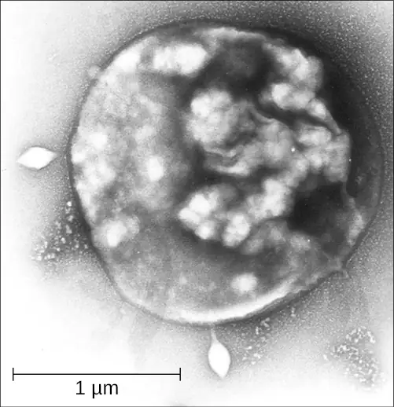
Another genus, Thermoproteus, is represented by strictly anaerobic organisms with an optimal growth temperature of 85 °C. They have flagella and, therefore, are motile. Thermoproteus has a cellular membrane in which lipids form a monolayer rather than a bilayer, which is typical for archaea. Its metabolism is autotrophic. To synthesize ATP, Thermoproteus spp. reduce sulfur or molecular hydrogen and use carbon dioxide or carbon monoxide as a source of carbon. Thermoproteus is thought to be the deepest-branching genus of Archaea, and thus is a living example of some of our planet’s earliest forms of life.
Check Your Understanding
- What types of environments do Crenarchaeota prefer?
Euryarchaeota¶
The phylum Euryarchaeota includes several distinct classes. Species in the classes Methanobacteria, Methanococci, and Methanomicrobia represent Archaea that can be generally described as methanogens. Methanogens are unique in that they can reduce carbon dioxide in the presence of hydrogen, producing methane. They can live in the most extreme environments and can reproduce at temperatures varying from below freezing to boiling. Methanogens have been found in hot springs as well as deep under ice in Greenland. Methanogens also produce gases in ruminants and humans. Some scientists have even hypothesized that methanogens may inhabit the planet Mars because the mixture of gases produced by methanogens resembles the makeup of the Martian atmosphere.26
The class Halobacteria (which was named before scientists recognized the distinction between Archaea and Bacteria) includes halophilic (“salt-loving”) archaea. Halobacteria require a very high concentrations of sodium chloride in their aquatic environment. The required concentration is close to saturation, at 36%; such environments include the Dead Sea as well as some salty lakes in Antarctica and south-central Asia. One remarkable feature of these organisms is that they perform photosynthesis using the protein bacteriorhodopsin, which gives them, and the bodies of water they inhabit, a beautiful purple color (Figure 4.27).
Notable species of Halobacteria include Halobacterium salinarum, which may be the oldest living organism on earth; scientists have isolated its DNA from fossils that are 250 million years old.27 Another species, Haloferax volcanii, shows a very sophisticated system of ion exchange, which enables it to balance the concentration of salts at high temperatures.
Check Your Understanding
- Where do Halobacteria live?
Micro Connections: Finding a Link Between Archaea and Disease
Archaea are not known to cause any disease in humans, animals, plants, bacteria, or in other archaea. Although this makes sense for the extremophiles, not all archaea live in extreme environments. Many genera and species of Archaea are mesophiles, so they can live in human and animal microbiomes, although they rarely do. As we have learned, some methanogens exist in the human gastrointestinal tract. Yet we have no reliable evidence pointing to any archaean as the causative agent of any human disease.
Still, scientists have attempted to find links between human disease and archaea. For example, in 2004, Lepp et al. presented evidence that an archaean called Methanobrevibacter oralis inhabits the gums of patients with periodontal disease. The authors suggested that the activity of these methanogens causes the disease.28 However, it was subsequently shown that there was no causal relationship between M. oralis and periodontitis. It seems more likely that periodontal disease causes an enlargement of anaerobic regions in the mouth that are subsequently populated by M. oralis.29
There remains no good answer as to why archaea do not seem to be pathogenic, but scientists continue to speculate and hope to find the answer.
Chapter Review¶
Key Concepts and Summary¶
4.1 Prokaryote Habitats, Relationships, and Microbiomes¶
- Prokaryotes are unicellular microorganisms whose cells have no nucleus.
- Prokaryotes can be found everywhere on our planet, even in the most extreme environments.
- Prokaryotes are very flexible metabolically, so they are able to adjust their feeding to the available natural resources.
- Prokaryotes live in communities that interact among themselves and with large organisms that they use as hosts (including humans).
- The totality of forms of prokaryotes (particularly bacteria) living on the human body is called the human microbiome, which varies between regions of the body and individuals, and changes over time.
- The totality of forms of prokaryotes (particularly bacteria) living in a certain region of the human body (e.g., mouth, throat, gut, eye, vagina) is called the microbiota of this region.
- Prokaryotes are classified into domains Archaea and Bacteria.
- In recent years, the traditional approaches to classification of prokaryotes have been supplemented by approaches based on molecular genetics.
4.2 Proteobacteria¶
- Proteobacteria is a phylum of gram-negative bacteria discovered by Carl Woese in the 1980s based on nucleotide sequence homology.
- Proteobacteria are further classified into the classes alpha-, beta-, gamma-, delta- and epsilonproteobacteria, each class having separate orders, families, genera, and species.
- Alphaproteobacteria include several obligate and facultative intracellular pathogens, including the rickettsias. Some Alphaproteobacteria can convert atmospheric nitrogen to nitrites, making nitrogen usable for other forms of life.
- Betaproteobacteria are a diverse group of bacteria that include human pathogens of the genus Neisseria and the species Bordetella pertussis.
- Gammaproteobacteria are the largest and the most diverse group of Proteobacteria. Many are human pathogens that are aerobes or facultative anaerobes. Some Gammaproteobacteria are enteric bacteria that may be coliform or noncoliform. Escherichia coli, a member of Gammaproteobacteria, is perhaps the most studied bacterium.
- Deltaproteobacteria make up a small group able to reduce sulfate or elemental sulfur. Some are scavengers and form myxospores, with multicellular fruiting bodies.
- Epsilonproteobacteria make up the smallest group of Proteobacteria. The genera Campylobacter and Helicobacter are human pathogens.
4.3 Nonproteobacteria Gram-Negative Bacteria and Phototrophic Bacteria¶
- Gram-negative nonproteobacteria include the taxa spirochetes; the Chlamydia, Cytophaga, Fusobacterium, Bacteroides group; Planctomycetes; and many representatives of phototrophic bacteria.
- Spirochetes are motile, spiral bacteria with a long, narrow body; they are difficult or impossible to culture.
- Several genera of spirochetes contain human pathogens that cause such diseases as syphilis and Lyme disease.
- Cytophaga, Fusobacterium, and Bacteroides are classified together as a phylum called the CFB group. They are rod-shaped anaerobic organoheterotrophs and avid fermenters. Cytophaga are aquatic bacteria with the gliding motility. Fusobacteria inhabit the human mouth and may cause severe infectious diseases. Bacteroides are present in vast numbers in the human gut, most of them being mutualistic but some are pathogenic.
- Planctomycetes are aquatic bacteria that reproduce by budding; they may form large colonies, and develop a holdfast.
- Phototrophic bacteria are not a taxon but, rather, a group categorized by their ability to use the energy of sunlight. They include Proteobacteria and nonproteobacteria, as well as sulfur and nonsulfur bacteria colored purple or green.
- Sulfur bacteria perform anoxygenic photosynthesis, using sulfur compounds as donors of electrons, whereas nonsulfur bacteria use organic compounds (succinate, malate) as donors of electrons.
- Some phototrophic bacteria are able to fix nitrogen, providing the usable forms of nitrogen to other organisms.
- Cyanobacteria are oxygen-producing bacteria thought to have played a critical role in the forming of the earth’s atmosphere.
4.4 Gram-Positive Bacteria¶
- Gram-positive bacteria are a very large and diverse group of microorganisms. Understanding their taxonomy and knowing their unique features is important for diagnostics and treatment of infectious diseases.
- Gram-positive bacteria are classified into high G+C gram-positive and low G+C gram-positive bacteria, based on the prevalence of guanine and cytosine nucleotides in their genome
- Actinobacteria is the taxonomic name of the class of high G+C gram-positive bacteria. This class includes the genera Actinomyces, Arthrobacter, Corynebacterium, Frankia, Gardnerella, Micrococcus, Mycobacterium, Nocardia, Cutibacterium, Rhodococcus, and Streptomyces. Some representatives of these genera are used in industry; others are human or animal pathogens.
- Examples of high G+C gram-positive bacteria that are human pathogens include Mycobacteriumtuberculosis, which causes tuberculosis; M. leprae, which causes leprosy (Hansen’s disease); and Corynebacteriumdiphtheriae, which causes diphtheria.
- Clostridia spp. are low G+C gram-positive bacteria that are generally obligate anaerobes and can form endospores. Pathogens in this genus include C.perfringens (gas gangrene), C. tetani (tetanus), and C. botulinum (botulism).
- Lactobacillales include the genera Enterococcus, Lactobacillus, Leuconostoc, and Streptococcus. Streptococcus is responsible for many human diseases, including pharyngitis (strep throat), scarlet fever, rheumatic fever, glomerulonephritis, pneumonia, and other respiratory infections.
- Bacilli is a taxonomic class of low G+C gram-positive bacteria that include rod-shaped and coccus-shaped species, including the genera Bacillus and Staphylococcus. B. anthracis causes anthrax, B. cereus may cause opportunistic infections of the gastrointestinal tract, and S.aureus strains can cause a wide range of infections and diseases, many of which are highly resistant to antibiotics.
- Mycoplasma spp. are very small, pleomorphic low G+C gram-positive bacteria that lack cell walls. M. pneumoniae causes atypical pneumonia.
4.5 Deeply Branching Bacteria¶
- Deeply branching bacteria are phylogenetically the most ancient forms of life, being the closest to the last universal common ancestor.
- Deeply branching bacteria include many species that thrive in extreme environments that are thought to resemble conditions on earth billions of years ago
- Deeply branching bacteria are important for our understanding of evolution; some of them are used in industry
4.6 Archaea¶
- Archaea are unicellular, prokaryotic microorganisms that differ from bacteria in their genetics, biochemistry, and ecology.
- Some archaea are extremophiles, living in environments with extremely high or low temperatures, or extreme salinity.
- Only archaea are known to produce methane. Methane-producing archaea are called methanogens.
- Halophilic archaea prefer a concentration of salt close to saturation and perform photosynthesis using bacteriorhodopsin.
- Some archaea, based on fossil evidence, are among the oldest organisms on earth.
- Archaea do not live in great numbers in human microbiomes and are not known to cause disease.
Multiple Choice¶
4.1 Prokaryote Habitats, Relationships, and Microbiomes¶
1. The term prokaryotes refers to which of the following?
- very small organisms
- unicellular organisms that have no nucleus
- multicellular organisms
- cells that resemble animal cells more than plant cells
Answer
B
2. The term microbiota refers to which of the following?
- all microorganisms of the same species
- all of the microorganisms involved in a symbiotic relationship
- all microorganisms in a certain region of the human body
- all microorganisms in a certain geographic region
Answer
C
3. Which of the following refers to the type of interaction between two prokaryotic populations in which one population benefits and the other is not affected?
- mutualism
- commensalism
- parasitism
- neutralism
Answer
B
4.2 Proteobacteria¶
4. Which of the following describes Proteobacteria in domain Bacteria?
- phylum
- class
- species
- genus
Answer
A
5. Which of the following Alphaproteobacteria is the cause of Rocky Mountain spotted fever and typhus?
- Bartonella
- Coxiella
- Rickettsia
- Ehrlichia
- Brucella
Answer
C
6. Class Betaproteobacteria includes all but which of the following genera?
- Neisseria.
- Bordetella.
- Leptothrix.
- Campylobacter.
Answer
D
7. Haemophilus influenzae is a common cause of which of the following?
- influenza
- dysentery
- upper respiratory tract infections
- hemophilia
Answer
C
4.3 Nonproteobacteria Gram-Negative Bacteria and Phototrophic Bacteria¶
8. Which of the following is the organelle that spirochetes use to propel themselves?
- plasma membrane
- axial filament
- pilum
- fimbria
Answer
B
9. Which of the following bacteria are the most prevalent in the human gut?
- cyanobacteria
- staphylococci
- Borrelia
- Bacteroides
Answer
D
10. Which of the following refers to photosynthesis performed by bacteria with the use of water as the donor of electrons?
- oxygenic
- anoxygenic
- heterotrophic
- phototrophic
Answer
A
4.4 Gram-Positive Bacteria¶
11. Which of the following bacterial species is classified as high G+C gram-positive?
- Corynebacterium diphtheriae
- Staphylococcus aureus
- Bacillus anthracis
- Streptococcus pneumonia
Answer
A
4.5 Deeply Branching Bacteria¶
12. The term “deeply branching” refers to which of the following?
- the cellular shape of deeply branching bacteria
- the position in the evolutionary tree of deeply branching bacteria
- the ability of deeply branching bacteria to live in deep ocean waters
- the pattern of growth in culture of deeply branching bacteria
Answer
B
13. Which of these deeply branching bacteria is considered a polyextremophile?
- Aquifex pyrophilus
- Deinococcus radiodurans
- Staphylococcus aureus
- Mycobacterium tuberculosis
Answer
B
4.6 Archaea¶
14. Archaea and Bacteria are most similar in terms of their ________.
- genetics
- cell wall structure
- ecology
- unicellular structure
Answer
D
15. Which of the following is true of archaea that produce methane?
- They reduce carbon dioxide in the presence of nitrogen.
- They live in the most extreme environments.
- They are always anaerobes.
- They have been discovered on Mars.
Answer
B
True/False¶
16. Among prokaryotes, there are some that can live in every environment on earth.
Answer
True
Fill in the Blank¶
4.1 Prokaryote Habitats, Relationships, and Microbiomes¶
17. When prokaryotes live as interacting communities in which one population benefits to the harm of the other, the type of symbiosis is called ________.
Answer
parasitism
18. The domain ________ does not include prokaryotes.
Answer
Eukarya
19. Pathogenic bacteria that are part of the transient microbiota can sometimes be eliminated by ________ therapy.
Answer
antibiotic
20. Nitrogen-fixing bacteria provide other organisms with usable nitrogen in the form of ________.
Answer
ammonia
4.2 Proteobacteria¶
21. Rickettsias are ________ intracellular bacteria.
Answer
obligate
22. The species ________, which belongs to Epsilonproteobacteria, causes peptic ulcers of the stomach and duodenum.
Answer
Helicobacter pylori
23. The genus Salmonella belongs to the class ________ and includes pathogens that cause salmonellosis and typhoid fever.
Answer
Gammaproteobacteria
4.3 Nonproteobacteria Gram-Negative Bacteria and Phototrophic Bacteria¶
24. The bacterium that causes syphilis is called ________.
Answer
Treponema pallidum pallidum
25. Bacteria in the genus Rhodospirillum that use hydrogen for oxidation and fix nitrogen are ________ bacteria.
Answer
purple nonsulfur
4.4 Gram-Positive Bacteria¶
26. Streptococcus is the ________ of bacteria that is responsible for many human diseases.
Answer
genus
27. One species of Streptococcus, S. pyogenes, is a classified as a ________ pathogen due to the characteristic production of pus in infections it causes.
Answer
pyogenic
28. Cutibacterium belongs to ________ G+C gram-positive bacteria. One of its species is used in the food industry and another causes acne.
Answer
high
4.5 Deeply Branching Bacteria¶
29. The length of the branches of the evolutionary tree characterizes the evolutionary ________ between organisms.
Answer
distance
30. The deeply branching bacteria are thought to be the form of life closest to the last universal ________ ________.
Answer
common ancestor
31. Many of the deeply branching bacteria are aquatic and hyperthermophilic, found near underwater volcanoes and thermal ocean ________.
Answer
vents
32. The deeply branching bacterium Deinococcus radiodurans is able to survive exposure to high doses of ________.
Answer
ionizing radiation
4.6 Archaea¶
33. ________ is a genus of Archaea. Its optimal environmental temperature ranges from 70 °C to 80 °C, and its optimal pH is 2–3. It oxidizes sulfur and produces sulfuric acid.
Answer
Sulfolobus
34. ________ was once thought to be the cause of periodontal disease, but, more recently, the causal relationship between this archaean and the disease was not confirmed.
Answer
Methanobrevibacter oralis
Short Answer¶
4.1 Prokaryote Habitats, Relationships, and Microbiomes¶
35. Compare commensalism and amensalism.
36. Give an example of the changes of human microbiota that result from medical intervention.
4.2 Proteobacteria¶
37. What is the metabolic difference between coliforms and noncoliforms? Which category contains several species of intestinal pathogens?
38. Why are Mycoplasma and Chlamydia classified as obligate intracellular pathogens?
4.3 Nonproteobacteria Gram-Negative Bacteria and Phototrophic Bacteria¶
39. Explain the term CFB group and name the genera that this group includes.
40. Name and briefly describe the bacterium that causes Lyme disease.
41. Characterize the phylum Cyanobacteria.
4.4 Gram-Positive Bacteria¶
42. Name and describe two types of S. aureus that show multiple antibiotic resistance.
4.5 Deeply Branching Bacteria¶
43. Briefly describe the significance of deeply branching bacteria for basic science and for industry.
44. What is thought to account for the unique radiation resistance of D. radiodurans?
4.6 Archaea¶
45. What accounts for the purple color in salt ponds inhabited by halophilic archaea?
46. What evidence supports the hypothesis that some archaea live on Mars?
Critical Thinking¶
4.2 Proteobacteria¶
47. The cell shown is found in the human stomach and is now known to cause peptic ulcers. What is the name of this bacterium?
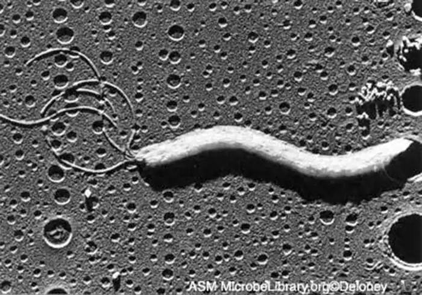
4.4 Gram-Positive Bacteria¶
48. The microscopic growth pattern shown is characteristic of which genus of bacteria?
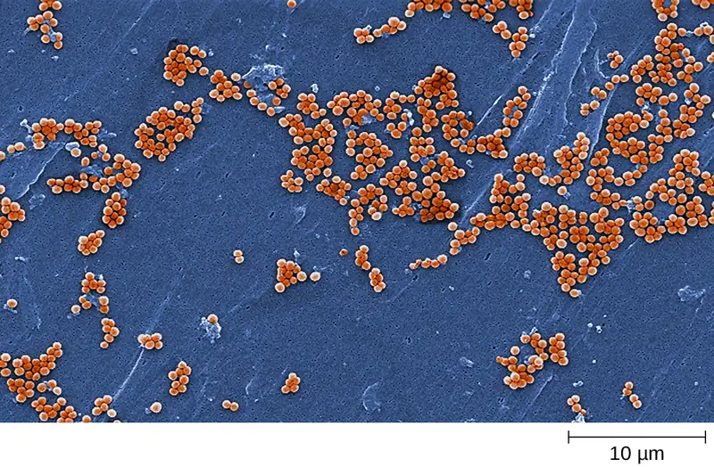
4.6 Archaea¶
49. What is the connection between this methane bog and archaea?
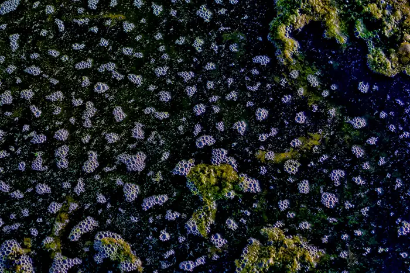
Adapted from Microbiology by OpenStax, licensed under CC BY 4.0. Access the original for free at openstax.org. Changes: converted to the web reading format of The Open Book Project.
-
R. Sender et al. "Revised Estimates for the Number of Human and Bacteria Cells in the Body." PLoS Biology 14 no. 8 (August 19, 2016): https://doi.org/10.1371/journal.pbio.1002533. ↩
-
A. Abbott. “Scientists Bust Myth That Our Bodies Have More Bacteria Than Human Cells: Decades-Old Assumption about Microbiota Revisited.” Nature. http://www.nature.com/news/scientists-bust-myth-that-our-bodies-have-more-bacteria-than-human-cells-1.19136. Accessed June 3, 2016. ↩
-
A.M. Kravetz “Unique Bacteria Fights Man-Made Chemical Waste.” 2012. http://www.livescience.com/25181-bacteria-strain-cleans-up-toxins-nsf-bts.html. Accessed March 9, 2015. ↩
-
E.M. Bik et al. “Bacterial Diversity in the Oral Cavity of 10 Healthy Individuals.” The ISME Journal 4 no. 8 (2010):962–974. ↩
-
C.C. Booijink et al. “High Temporal and Intra-Individual Variation Detected in the Human Ileal Microbiota.” Environmental Microbiology 12 no. 12 (2010):3213–3227. ↩
-
National Institutes of Health. “Human Microbiome Project. Overview.” http://commonfund.nih.gov/hmp/overview. Accessed June 7, 2016. ↩
-
Q. Dong et al. “Diversity of Bacteria at Healthy Human Conjunctiva.” Investigative Ophthalmology & Visual Science 52 no. 8 (2011):5408–5413. ↩
-
F.E. Dewhirst et al. “The Human Oral Microbiome.” Journal of Bacteriology 192 no. 19 (2010):5002–5017. ↩
-
J.C. Lagier et al. “Microbial Culturomics: Paradigm Shift in the Human Gut Microbiome Study.” Clinical Microbiology and Infection 18 no. 12 (2012):1185–1193. ↩
-
C.R. Woese. “Bacterial Evolution.” Microbiological Review 51 no. 2 (1987):221–271. ↩
-
H. Reichenbach. “Myxobacteria, Producers of Novel Bioactive Substances.” Journal of Industrial Microbiology & Biotechnology 27 no. 3 (2001):149–156. ↩
-
S. Suerbaum, P. Michetti. “Helicobacter pylori infection.” New England Journal of Medicine 347 no. 15 (2002):1175–1186. ↩
-
R.C. Fuller et al. “Carbon Metabolism in Chromatium.” Journal of Biological Chemistry 236 (1961):2140–2149. ↩
-
T.T. Selao et al. “Comparative Proteomic Studies in Rhodospirillum rubrum Grown Under Different Nitrogen Conditions.” Journal of Proteome Research 7 no. 8 (2008):3267–3275. ↩
-
A. De los Rios et al. “Ultrastructural and Genetic Characteristics of Endolithic Cyanobacterial Biofilms Colonizing Antarctic Granite Rocks.” FEMS Microbiology Ecology 59 no. 2 (2007):386–395. ↩
-
T. Cavalier-Smith. “Membrane Heredity and Early Chloroplast Evolution.” Trends in Plant Science 5 no. 4 (2000):174–182. ↩
-
S. Zhang, D.A. Bryant. “The Tricarboxylic Acid Cycle in Cyanobacteria.” Science 334 no. 6062 (2011):1551–1553. ↩
-
A. Cain et al. “Cyanobacteria as a Biosorbent for Mercuric Ion.” Bioresource Technology 99 no. 14 (2008):6578–6586. ↩
-
C.S. Ku et al. “Edible Blue-Green Algae Reduce the Production of Pro-Inflammatory Cytokines by Inhibiting NF-κB Pathway in Macrophages and Splenocytes.” Biochimica et Biophysica Acta 1830 no. 4 (2013):2981–2988. ↩
-
I. Stewart et al. Cyanobacterial Poisoning in Livestock, Wild Mammals and Birds – an Overview. Advances in Experimental Medicine and Biology 619 (2008):613–637. ↩
-
J. Andre. Bioethics as Practice. Chapel Hill, NC: University of North Carolina Press, 2002. ↩
-
G. Dietrich et al. “Acetothermus paucivorans, gen. nov., sp. Nov., a Strictly Anaerobic, Thermophilic Bacterium From Sewage Sludge, Fermenting Hexoses to Acetate, CO2, and H2.” Systematic and Applied Microbiology 10 no. 2 (1988):174–179. ↩
-
E. Blochl et al.“Pyrolobus fumani, gen. and sp. nov., represents a novel group of Archaea, extending the upper temperature limit for life to 113°C.” Extremophiles 1 (1997):14–21. ↩
-
T.D. Brock et al. “Sulfolobus: A New Genus of Sulfur-Oxidizing Bacteria Living at Low pH and High Temperature.” Archiv für Mikrobiologie 84 no. 1 (1972):54–68. ↩
-
S. Pacheco et al. “Affinity Transfer to the Archaeal Extremophilic Sac7d Protein by Insertion of a CDR.” Protein Engineering Design and Selection 27 no. 10 (2014):431-438. ↩
-
R.R. Britt “Crater Critters: Where Mars Microbes Might Lurk.” http://www.space.com/1880-crater-critters-mars-microbes-lurk.html. Accessed April 7, 2015. ↩
-
H. Vreeland et al. “Fatty acid and DA Analyses of Permian Bacterium Isolated From Ancient Salt Crystals Reveal Differences With Their Modern Relatives.” Extremophiles 10 (2006):71–78. ↩
-
P.W. Lepp et al. “Methanogenic Archaea and Human Gum Disease.” Proceedings of the National Academies of Science of the United States of America 101 no. 16 (2004):6176–6181. ↩
-
R.I. Aminov. “Role of Archaea in Human Disease.” Frontiers in Cellular and Infection Microbiology 3 (2013):42. ↩